在前一章中,我们成功实现了 Scrapy 分布式爬虫,但是在这个过程中我们发现有很多不方便的地 方。比如在将 Scrapy项目放到各台主机上运行时,我们采用的是文件上传或者Git同步的方式,这样 需要各台主机都进行操作,如果有100台、1000台主机,那么工作量可想而知。另外,如果代码需要 改动的话,那么还需要额外把改动同时更新到所有主机上,操作非常烦琐,并且也容易出错。 本章中,我们就来了解一下分布式爬虫在部署方面可以采取的一些措施,以方便地实现爬虫任务 的批量部署和管理。 本章主要介绍两种 Scrapy 分布式爬虫管理方案:基于Scrapyd的管理方案和基于Kubernetes 的管 理方案。
17.1 Scrapyd 和 ScrapydAPI 的使用
在上一章中,我们学习了Scrapy 框架,利用它可以快速开发一个爬虫程序。Scrapyd又是什么呢? 跟 Scrapy 相比,Scrapyd多了一个字母d,这个d其实就是部署(deploy)的意思,所以Scrapyd就是 为了方便管理和部署 Scrapy 爬虫程序而诞生的。本节中,我们先简单了解下 Scrapyd及其用法。
1. 了解 Scrapyd
Scrapyd 是一个运行Scrapy 爬虫的服务程序,它提供一系列HTTP接口来帮助我们部署、启动、 停止和删除爬虫程序。Scrapyd 支持版本管理,同时还可以管理多个爬虫任务,利用它我们可以非常 方便地完成 Scrapy 爬虫项目的部署任务调度。
2. 准备工作
请确保本机或服务器已经正确安装好了 Scrapyd,安装命令如下:
pip3 install scrapyd更详细的安装流程可以参考:https://setup.scrape.center/scrapyd。 安装并完成 Scrapyd 相应的配置之后,我们直接输入 scrapyd 即可启动对应的服务,命令如下: scrapyd 运行之后,会有类似如下的输出:
[Launcher] Scrapyd 1.2.1 started: max_proc=8, runner='scrapyd.runner'这就代表 Scrapyd已经启动成功了。
3. 访问 Scrapyd
Scrapyd 默认会在6800端口上运行。访问服务器的6800端口,我们就可以看到一个 Web UI 页面 了。本案例中,我们依然在A(192.168.2.3)服务器上启动 Scrapyd 服务。启动完成之后,我们打开
http://192.168.2.3:6800/, 即可看到类似图17-1所示的页面。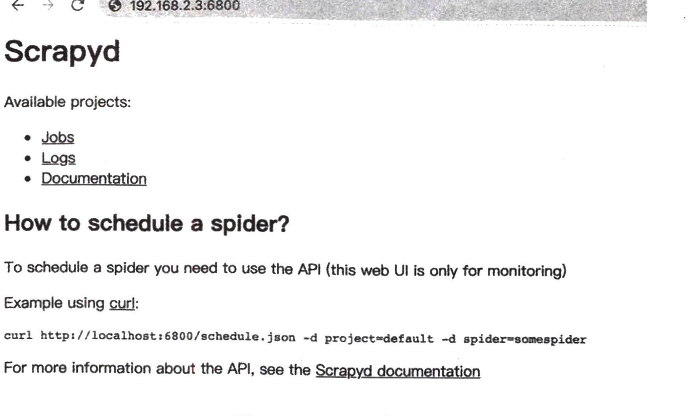
如果可以成功访问到此页面,那么证明 Scrapyd 配置就没有问题了。 如果访问失败,那 Scrapyd 监听的地址很有可能是 127.0.0.1,这是默认配置。此时可以修改 scrapyd.conf 文件,将 bind_address 修改为 0.0.0.0,具体可以参见 https://scrapyd.readthedocs.io/en/ stable/config.html#config。 比如,可以在当前命令行所在目录下新建一个 scrapyd.conf 文件,将其内容进行如下修改:
[scrapyd]
bind_address = 0.0.0.0
http_port = 6800这样就指定了 Scrapyd 可以被公开访问,同时运行在 6800 端口。修改完成之后,再次重启 Scrapyd, 它应该就可以被访问到了。
4. Scrapyd 的功能
Scrapyd 提供了一系列 HTTP 接口来实现各种操作,这里我们可以将接口的功能梳理一下,以 Scrapyd 所在的 IP 192.168.2.3 为例来进行说明。
daemonstatus.json
这个接口负责查看 Scrapyd 当前的服务和任务状态,我们可以用 curl 命令来请求这个接口,具体 如下: curl http://192.168.2.3:6800/daemonstatus.json 这样我们就会得到如下结果:
{"status": "ok", "finished": 90, "running": 9, "node_name": "vm1", "pending": 0}返回结果是 JSON字符串,其中 status 是当前运行状态,finished 代表当前已经完成的 Scrapy 任 务,running 代表正在运行的 Scrapy 任务,pending 代表等待被调度的 Scrapyd 任务,node_name 就是 主机的名称。
addversion.json
这个接口主要用来部署Scrapy项目。在部署的时候,我们需要首先将项目打包成egg文件,然后 传入项目名称和部署版本。 我们可以用如下方式实现项目部署:
curl http://192.168.2.3:6800/addversion.json -F project=<project_name> -F version=v1 -F
egg=<project_name>.egg这里 -F 即代表添加一个参数,同时我们还需要将项目打包成 egg 文件放到本地。另外,还需要 将<project_name>替换成真实的项目名称。 这样发出请求之后,我们可以得到类似如下结果:
{"status": "ok", "spiders": 3}这个结果表明部署成功,并且其中包含的Spider的数量为3。 注意 Spider 的数量视具体的项目为准,不同的项目包含的Spider 数量可能不同,此处样侈 使用此方法部署可能比较烦琐,后文会介绍更方便的工具来实现项目的部署。
schedule.json
部署完成之后,项目其实就存在于 Scrapyd之上了,那么怎么来运行这个Scrapy项目呢?此时可 以借助 schedule.json 这个接口,它负责调度已部署好的Scrapy 项目。 我们可以用如下方式实现任务调度:
curl http://192.168.2.3:6800/schedule.json -d project=<project_name> -d spider=<spider_name>这里需要传入两个参数:project 即 Scrapy 项目名称,spider 即 Spider 名称。 返回结果类似如下:
{"status": "ok", "jobid": "6487ec79947edab326d6db28a2d86511e8247444"}其中 status 代表 Scrapy 项目启动情况,jobid 代表当前正在运行的爬取任务代号。 类似于执行了如下命令:
scrapy crawl <spider_name>这就相当于用 Scrapyd启动了对应项目的一个Spider。Spider 是由Scrapyd运行的,运行之后就相 当于运行了一个任务,其任务标识代号就是jobid,我们可以根据这个 jobid 来查看或操作该 Spider的 运行状态。
cancel.json
这个接口可以用来取消某个爬取任务。如果这个任务是pending状态,那么它将会被移除;如果 这个任务是 running 状态,那么它将会被终止。 我们可以用下面的命令来取消任务的运行:
curl http://192.168.2.3:6800/cancel.json -d project=<project_name> -d
job=6487ec79947edab326d6db28a2d86511e8247444这里需要传入两个参数: project 即项目名称, job 即爬取任务的代号, 其值就是上文所说的 schedule.json 接口返回的 jobid 的内容。 返回结果如下:
{"status": "ok", "prevstate": "running"}其中 status 代表请求执行情况, prevstate 代表之前的运行状态。
listprojects.json
这个接口用来列出部署到 Scrapyd 服务上的所有项目的描述信息。 我们可以用下面的命令来获取 Scrapyd 服务器上的所有项目描述: curl http://192.168.2.3:6800/listprojects.json 这里不需要传入任何参数。 返回结果类似如下:
{"status": "ok", "projects": ["project1", "project2"]}其中 status 代表请求执行情况, projects 是项目名称列表。
listversions.json
这个接口用来获取某个项目的所有版本号。版本号是按顺序排列的, 其最后一个条目是最新的版 本号。 我们可以用如下命令来获取项目的版本号:
curl http://192.168.2.3:6800/listversions.json?project=<project_name>这里需要用到参数 project, 就是项目的名称。 返回结果如下:
{"status": "ok", "versions": ["v1", "v2"]}其中 status 代表请求执行情况, versions 是版本号列表。
listspiders.json
这个接口用来获取某个项目最新的一个版本的所有 Spider 名称。 我们可以用如下命令来获取项目的 Spider 名称:
curl http://192.168.2.3:6800/listspiders.json?project=<project_name>这里需要用到参数 project, 就是项目的名称。 返回结果类似如下:
{"status": "ok", "spiders": ["spider1"]}其中 status 代表请求执行情况, spiders 是 Spider 名称列表。
listjobs.json
这个接口用来获取某个项目当前运行的所有任务详情。 我们可以用如下命令来获取所有任务详情: curl http://192.168.2.3:6800/listjobs.json?project=project 这里需要用到参数 project, 就是项目的名称。
返回结果如下:
{"status": "ok",
"pending": [{"id": "78391cc0fcaf11e1b0090800272a6d06", "spider": "spider1"}],
"running": [{"id": "422e608f9f28cef127b3d5ef93fe9399", "spider": "spider1", "start_time": "2020-07-12
10:14:03.594664"}],
"finished": [{"id": "2f16646cfcaf11e1b0090800272a6d06", "spider": "spider1", "start_time": "2020-07-12
10:14:03.594664", "end_time": "2020-07-12 10:24:03.594664"}]}其中 status 代表请求执行情况,pending 代表当前正在等待的任务,running 代表当前正在运行的任 务,finished 代表已经完成的任务。
delversion.json
这个接口用来删除项目的某个版本。 我们可以用如下命令来删除项目版本:
curl http://192.168.2.3:6800/delversion.json -d project=<project_name> -d version=<version_name>这里需要用到参数project,就是项目的名称;还需要用到参数 version,就是项目的版本。 返回结果如下:
{"status": "ok"}其中 status 代表请求执行情况,这样就代表删除成功了。
delproject.json
这个接口用来删除某个项目。 我们可以用如下命令来删除某个项目:
curl http://192.168.2.3:6800/delproject.json -d project=<project_name>这里需要用到参数 project,就是项目的名称。 返回结果如下:
{"status": "ok"}其中 status 代表请求执行情况,这样就代表删除成功了。 以上就是 Scrapyd所有的接口,我们可以直接请求 HTTP接口来控制项目的部署、启动、运行等 操作。
5. ScrapydAPI 的使用
以上这些接口用起来可能还不是很方便,没关系,ScrapydAPI库对这些接口又做了一层封装,使 用pip3 即可安装它:
pip3 install python-scrapyd-api下面我们来看下 ScrapydAPI 的使用方法,其核心原理和HTTP接口请求方式并无二致,只不过 用Python 封装后使用更加便捷。 我们可以用如下方式建立一个ScrapydAPI 对象:
from scrapyd_api import ScrapydAPI
scrapyd = ScrapydAPI('http://192.168.2.3:6800')然后就可以调用它的方法来实现对应接口的操作了,例如部署操作可以使用如下方式:
egg = open('project.egg', 'rb')
scrapyd.add_version('project', 'v1', egg)17.2 Scrapyd-Client 的使用
这样我们就可以将项目打包为 egg 文件,然后把本地打包的egg项目部署到远程 Scrapyd了。 另外,ScrapydAPI 还实现了所有Scrapyd 提供的API接口,名称都是相同的,参数也是相同的。 例如,我们调用list_projects 方法即可列出 Scrapyd 中所有已部署的项目:
scrapyd.list_projects()
['project1', 'project2']另外,其他方法在此不再——列举了,名称和参数都是相同的,更加详细的操作可以参考其官方 文档:http://python-scrapyd-api.readthedocs.io/。
6. 总结
本节介绍了 Scrapyd及ScrapydAPI的相关用法,我们可以通过它来部署项目,并通过HTTP接口 来控制爬虫任务的运行,不过这里有一个不方便的地方,那就是部署过程。首先它需要打包egg文件, 然后上传,这还是比较烦琐的。在下一节中,我们介绍一个更加方便的工具来完成部署过程。
前面我们了解了 Scrapyd 的基本用法,Scrapyd提供了一系列API来帮我们实现 Scrapy 爬虫项目 的管理,不过其中有一个不是很方便的流程,那就是部署,即如何将 Scrapy 项目部署到 Scrapyd上。 一般来说,部署的这个过程需要把项目打包成egg文件,可是这个打包过程其实相对还是比较烦琐的。 所以这里推荐由现成的工具来完成部署过程,它叫作 Scrapyd-Client。本节将简单介绍使用 Scrapyd-Client 部署 Scrapy 项目的方法。
1. 准备工作
请先确保 Scrapyd-Client 已经正确安装,使用pip3 安装即可:
pip3 install scrapyd-client具体的安装方式可以参考:https://setup.scrape.center/scrapyd-client。
2. Scrapyd-Client 的功能
为了方便 Scrapy项目的部署,Scrapyd-Client 提供两个功能。
将项目打包成 egg 文件。
将打包生成的 egg 文件通过addversion.json 接口部署到 Scrapyd上。 也就是说, Scrapyd-Client 帮我们把部署全部实现了,我们不需要再去关心egg文件是怎样生成的, 也不需要再去读 egg 文件并请求接口上传了,这一切的操作只需要执行一个命令即可完成。
3. Scrapyd-Client 部署
要部署 Scrapy 项目,我们首先需要修改一下项目的配置文件。例如我们之前写的 Scrapy 爬虫项 目,在项目的第一层会有一个 scrapy.cfg 文件,它的内容如下:
[settings]
default = scrapycompositedemo.settings[deploy]
#url= http://localhost:6800/
project = scrapycompositedemo这里我们需要配置一下deploy部分,例如我们要将项目部署到A主机(192.168.2.3)的Scrapyd上, 此时就需要将内容修改为:
[deploy]url = http://192.168.2.3:6800/
project = scrapycompositedemo这样我们再在 scrapy.cfg 文件所在路径下执行如下命令:
scrapyd-deploy
运行结果如下:
Packing version 1501682277 Deploying to project "scrapycompositedemo" in http://192.168.2.3:6800/addversion.json Server response (200):
{"status": "ok", "spiders": 1, "node_name": "vm1", "project": "scrapycompositedemo", "version": "1501682277"}返回这样的结果就代表部署成功了。
我们也可以指定项目版本(如果不指定的话,默认为当前时间戳),此时可以通过 version 参数传 递,例如:
scrapyd-deploy --version 201707131455
值得注意的是,在 Python 3 的 Scrapyd 1.2.0 版本中,我们不要指定版本号为带字母的字符串,要 为纯数字,否则可能会报错。
另外,如果有多台主机,我们可以配置各台主机的别名,例如可以修改配置文件为:
[deploy:vm1]
url = http://192.168.2.3:6800/
project = scrapycompositedemo[deploy:vm2]
url = http://192.168.2.4:6800/
project = scrapycompositedemo[deploy:vm3]
url = http://192.168.2.5:6800/
project = scrapycompositedemo有多台主机的话,就在此统一配置,一台主机对应一组配置,在 deploy 后面加上主机的别名即 可。这样如果我们想将项目部署到 IP 为 192.168.2.5 的 vm3 主机上,只需要执行如下命令:
scrapyd-deploy vm3
如此一来,如果有多台主机,我们只需要在 scrapy.cfg 文件中配置好各台主机的 Scrapyd 地址, 然后调用 scrapyd-deploy 命令加主机名称即可实现部署,非常方便。
默认情况下, Scrapyd 是没有登录验证的,比如 Basic Auth 的功能是不具备的,如果想要开启, 可以使用 Nginx 服务器实现。比如此处利用 Nginx 实现了 Scrapyd 的登录验证,Nginx 的监听端口修 改为了 6801,用户名和密码都是 admin,那么 scrapy.cfg 可以这样配置:
[deploy:vm1]
url = http://192.168.2.3:6801/
project = scrapycompositedemo
username = admin
password = admin这样通过加入 username 和 password 字段,我们就可以在部署时自动进行 Basic Auth 验证,然后 成功实现部署。
4. 总结
本节介绍了利用 Scrapyd-Client 来方便地将项目部署到 Scrapyd 的过程,有了它,部署不再是麻 烦事。
17.3 Gerapy 爬虫管理框架的使用
我们可以通过 Scrapyd-Client 将 Scrapy 项目部署到 Scrapyd 上,并且可以通过 ScrapydAPI 来控制 Scrapy 的运行。那么,我们是否可以做到更优化?方法是否更方便可控? 我们重新分析一下当前可以优化的问题。 □ 使用 Scrapyd-Client 部署时,需要在配置文件中配置好各台主机的地址,然后利用命令行执行 部署过程。如果我们省去各台主机的地址配置,将命令行对接图形界面,只需要点击按钮即可 实现批量部署,这样就更方便了。 □ 使用 ScrapydAPI 可以控制 Scrapyd 任务的启动、终止等工作,但很多操作还需要代码来实现, 同时获取爬取日志还比较烦琐。如果我们有一个图形界面,只需要点击按钮即可启动和终止爬 虫任务,同时还可以实时查看爬取日志报告,这将大大节省我们的时间和精力。 所以我们的目标其实是:更方便地控制爬虫运行、更直观地查看爬虫状态、更实时地查看爬取结 果、更简单地实现项目部署、更统一地实现主机管理,而所有这些工作均可通过 Gerapy 来实现。 Gerapy 是一个基于 Scrapyd、ScrapydAPI、Django、Vue.js 搭建的分布式爬虫管理框架,本节中我 们来简单介绍它的用法。
1. 准备工作
在开始之前,请确保已经正确安装好了 Gerapy,同样使用 pip3 安装即可:
pip3 install gerapy更详细的安装说明可以参考:https://setup.scrape.center/gerapy。
2. 使用说明
安装完 Gerapy 之后,我们就可以使用 gerapy 命令了。首先,可以利用 gerapy 命令新建一个工作 目录,如下: gerapy init 这样会在当前目录下生成一个 gerapy 文件夹,然后进入该文件夹,会发现一个空的 projects 文件 夹,这在后文会提及。 这时先对数据库进行初始化: gerapy migrate 这样即会生成一个 SQLite 数据库,该数据库中会保存各个主机配置信息、部署版本等。 接下来,我们可以生成一个管理账号: gerapy initadmin 这时候可以生成一个用户名和密码都为 admin 的管理员账号,用于后续系统的登录。 当然,如果不想使用默认的 admin 账号,也可以利用如下命令来创建单独的账号: gerapy createsuperuser 输入用户名和密码之后,就可以创建一个管理员账号了。 接下来,启动 Gerapy 服务,命令如下: gerapy runserver 这样即可在默认 8000 端口上开启 Gerapy 服务,用浏览器打开 http://localhost:8000 即可进入
Gerapy 的管理页面。 这时候会提示输入用户名和密码,如图 17-2 所示。
输入用户名和密码,即可登录系统了。可以看到,左侧菜单栏有主机管理、项目管理、任务管理 三大模块。 在主机管理中,我们可以添加各台主机的 Scrapyd 运行地址和端口,并加上名称标记。比如,要 添加主机A(192.168.2.3),就可以按照图17-3 这样填写。
这里的端口我们填写的是6800,即Scrapyd的运行端口。 添加之后,该主机便会出现在主机列表中,Gerapy 会监控各台主机的运行状况并以不同的状态标 识,如图17-4所示。
另外,刚才我们提到,在gerapy 目录下有一个空的 projects文件夹,这就是存放 Scrapy 目录的文 件夹。如果我们想要部署某个 Scrapy项目,只需要将该项目文件放到 projects 文件夹下即可。 这里我们可以将16.3节的分布式爬虫项目放入 projects 文件夹,如图17-5所示。
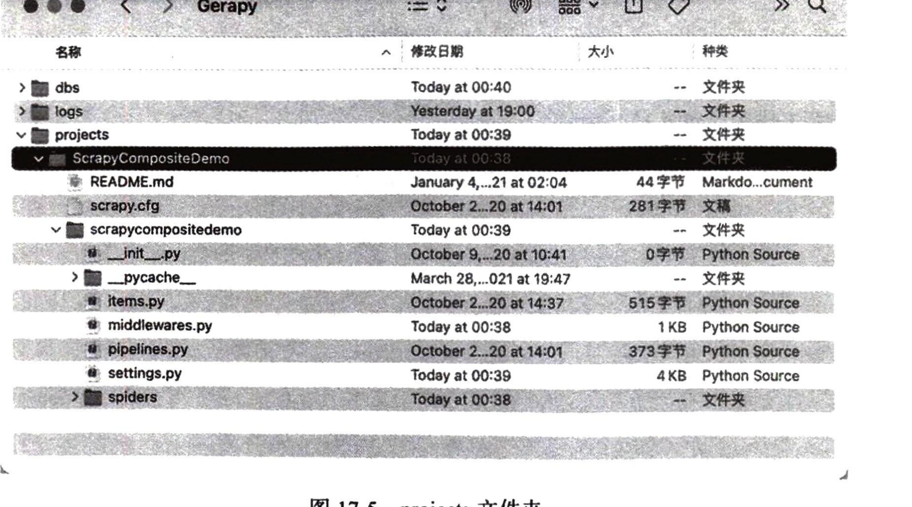
然后重新回到 Gerapy 管理界面,点击“项目管理”,即可看到当前项目列表,如图17-6所示。
Gerapy 提供了项目在线编辑功能,我们点击“编辑”按钮即可可视化地对项目进行编辑,如图17-7 所示。
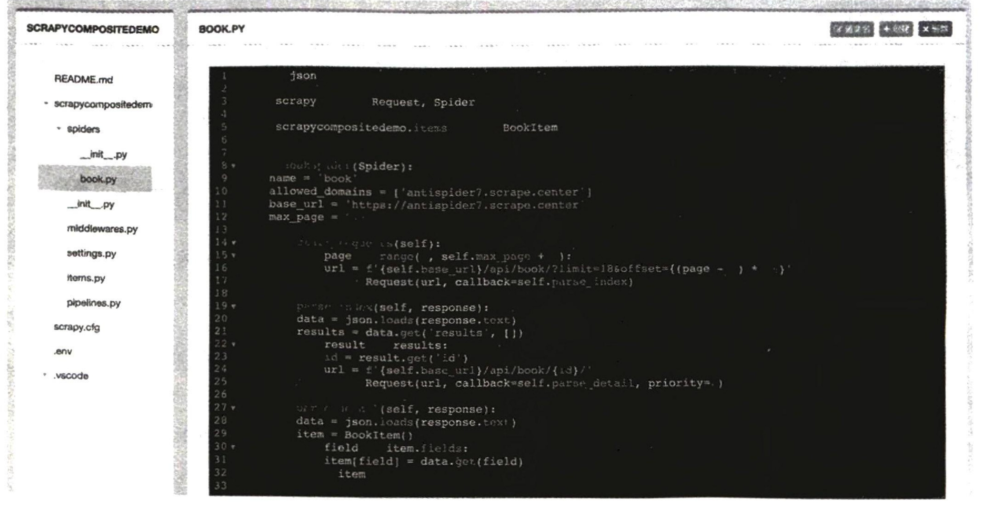
如果项目没有问题,可以点击“部署”按钮进行打包和部署。但是部署之前需要打包项目,打包 时可以指定版本描述,如图17-8所示。
打包完成之后,直接点击“部署”按钮即可将打包好的Scrapy项目部署到对应的云主机上,如图 17-9所示。当然,我们也可以批量部署。
17.4 将 Scrapy 项目打包成 Docker 镜像
部署完毕之后,就可以回到“主机管理”页面进行任务调度了。点击“调度”即可进入“任务管 理”页面,查看当前主机所有任务的运行状态。我们可以通过点击“新任务”“停止”等按钮来实现 任务的启动和停止等操作,同时也可以通过展开任务条目查看日志详情,如图17-10所示。
另外,我们还可以在“定时任务”面板中添加一些定时任务,支持单次执行、crontab 执行等规则, 更多的介绍可以参考 Gerapy 的官方文档:https://docs.gerapy.com。
3. 总结
本节中,我们介绍了Gerapy 的简单用法,利用它我们可以方便地实现 Scrapy项目的部署、管理 等操作。尤其是对于分布式爬虫的管理来说,Gerapy 可以帮我们提高更多效率,省去更多烦琐的步骤。
在本章前三节的内容中,我们了解了Scrapy项目的一种部署方式——Scrapyd,这是 Scrapy 官方 提供的一种用于部署和管理 Scrapy 项目的解决方案,再配合 Gerapy,我们可以更加方便地管理基于 Scrapyd 部署的Scrapy项目。 当然,上述方案并不是唯一的。随着容器化技术的发展,Docker+Kubernetes 的解决方案变得越 来越流行,Kubernetes 毫无疑问已经成了最主流的容器化编排工具,而且使用也越来越广泛。那么, 我们能否把 Scrapy 打包成 Docker容器,并迁移到 Kubernetes 进行管理和维护呢?当然是可以的。 接下来,我们就来了解下 Scrapy 项目的另外一种部署方式——基于 Docker + Kubernetes 的部署 和维护方案,具体的内容包括:
如何把 Scrapy 项目打包成一个Docker镜像;
如何利用 Docker Compose 来方便地维护和打包镜像; ■ 如何使用 Kubernetes 来部署 Scrapy 项目的Docker镜像;
如何监控 Scrapy 项目的爬取状态。 接下来,我们先来了解如何把一个Scrapy 项目制作成一个Docker镜像。
1. 准备工作
本节中,我们要把前文的 Scrapy 项目打包成一个Docker 镜像。 首先,本节基于前文 Scrapy-Redis 的分布式爬虫进行改写,代码见https://github.com/Python3WebSpider/ ScrapyCompositeDemo/tree/scrapy-redis,可以直接克隆代码,注意切换到scrapy-redis 分支,命令如下:
git clone -b scrapy-redis https://github.com/Python3WebSpider/ScrapyCompositeDemo.git运行上述命令之后,我们得到的就是 ScrapyCompositeDemo 项目的 scrapy-redis 分支的代码。 另外,我们还需要确保已经安装好 Docker 并能正常使用 docker 命令,具体的安装方式可以参考
https://setup.scrape.center/docker。另外,由于本项目需要用到代理池和账号池,所以还需要确保二者可以正常运行,具体的内容可 以参考16.3节。
2. 创建 Dockerfile
首先,在项目的根目录下新建一个 requirements.txt 文件,将整个项目依赖的Python 环境包都列 出来,如下所示: scrapy aiohttp scrapy-redis environs 如果库需要特定的版本,我们还可以指定版本号,如下所示:
scrapy>=2.0.0
pymongo>=3.7.3在项目根目录下新建一个 Dockerfile文件,文件不加任何后缀名,将其内容改为: FROM python:3.7 WORKDIR /app COPY requirements.txt . RUN pip install -r requirements.txt COPY . . CMD ["scrapy", "crawl", "book"] 第一行的 FROM 代表使用的Docker 基础镜像,这里我们直接使用python:3.7的镜像,在此基础上 运行 Scrapy项目。 第二行的 WORKDIR 是运行路径,这里我们将其设置为/app,这样在Docker中,最终运行程序所 在的路径就是/app。 第三行的 COPY 是将本地的 requirements.txt 复制到Docker 的工作路径下,即复制到/app下。 第四行的 RUN 指定了一个pip的命令,用来读取上一步复制到Docker 工作路径下的 requirements.txt 文件,并安装该文件里面列出的所有依赖库。 第五行的 COPY 是将当前文件夹下所有的文件全部复制到 Docker的/app路径下。这时候大家可 能有疑惑,为什么第三行不直接复制而需要再复制一次呢?这是因为这样可以单独将较为耗费构建时 间的安装依赖步骤独立为 Docker 镜像单独的层级。这样的话,只要 requirements.txt 不变,以后再次 构建 Docker 镜像的时候,就会直接利用已经构建的层级,不会再耗费构建时间。所以在适当的情况 下,我们可以试着将一些较为耗时的初始化操作单独放到相对靠前的层级来实现。 第六行的CMD 是容器启动命令。在容器运行时,此命令会被执行。这里我们直接用 scrapy crawl book 来启动爬虫。
3. 修改代码
由于我们对接的是Docker, 所以需要修改几处代码,比如代理池、账号池的API地址以及 连接地址,之前是直接写死在代码里面的,现在我们构建了 Docker镜像,那这些定义建议改成环境 变量的形式。 首先在 middleware.py文件中,accountpool_url 和 proxypool_url 变量的定义需要修改如下:
import os
accountpool_url = os.getenv('ACCOUNTPOOL_URL')
proxypool_url = os.getenv('PROXYPOOL_URL')这里将固定的 URL改写成通过getenv方法获取的环境变量,这时候需要另外导入os 这个库。对 应的两个环境变量分别为 ACCOUNTPOOL_URL 和 PROXYPOOL_URL。 另外,在 settings.py中,REDIS_URL 的定义也需要修改为通过环境变量获取的方式,具体如下:
REDIS_URL = os.getenv('REDIS_URL')修改完毕之后,我们就可以构建镜像了。
4. 构建镜像
接下来,我们便可以构建镜像了,相关命令如下: docker build -t scrapycompositedemo . 注意这条命令最后有一个.点号,代表当前运行目录。 输出结果类似如下: Sending build context to Docker daemon 257.5kB Step 1/6: FROM python:3.7
---> 22eb61a2cb94Step 2/6: WORKDIR /app
---> Using cache
---> 5a965b3af33aStep 3/6: COPY requirements.txt .
---> 8d949288babeStep 4/6: RUN pip install -r requirements.txt
---> Running in d4bbd8b879ccCollecting scrapy Downloading Scrapy-2.4.1-py2.py3-none-any.whl (239 kB) Collecting aiohttp Downloading aiohttp-3.7.3-cp37-cp37m-manylinux2014_x86_64.whl (1.3 MB) Successfully installed Automat-20.2.0 PyDispatcher-2.0.5 PyHamcrest-2.0.2 Twisted-20.3.0 aiohttp-3.7.3 async-timeout-3.0.1 attrs-20.3.0 cffi-1.14.4 chardet-3.0.4 constantly-15.1.0 cryptography-3.3.1 cssselect-1.1.0 hyperlink-21.0.0 idna-3.1 incremental-17.5.0 itemadapter-0.2.0 itemloaders-1.0.4 jmespath-0.10.0 lxml-4.6.2 multidict-5.1.0 parsel-1.6.0 protego-0.1.16 pyOpenSSL-20.0.1 pyasn1-0.4.8 pyasn1-modules-0.2.8 pycparser-2.20 queuelib-1.5.0 redis-3.5.3 scrapy-2.4.1 scrapy-redis-0.6.8 service-identity-18.1.0 six-1.15.0 typing-extensions-3.7.4.3 w3lib-1.22.0 yarl-1.6.3 zope.interface-5.2.0 Removing intermediate container d4bbd8b879cc
---> 7b5052599607Step 5/6: COPY .
---> 1d693eedb484Step 6/6: CMD ["scrapy", "crawl", "book"]
---> Running in 19d954c9137bRemoving intermediate container 19d954c9137b
---> a46de4b66276Successfully built a46de4b66276 Successfully tagged scrapycompositedemo:latest
这就证明镜像构建成功了,这时执行如下命令,可以查看构建的镜像: docker images 返回结果中有一行就是: scrapycompositedemo latest a46de4b66276 2 minutes ago 968MB 这就是我们新构建的镜像。
5. 运行
运行的时候,我们需要先指定环境变量。可以新建一个.env文件,其内容如下:
ACCOUNTPOOL_URL=http://host.docker.internal: 6777/antispider7/random
PROXYPOOL_URL=http://host.docker.internal:5555/randomREDIS_URL-redis://host.docker.internal:6379 这里定义了三个环境变量,分别是账号池、代理池、Redis数据库的连接地址,其中每个变量的 host 地址都是 host.docker.internal,这代表 Docker 所在宿主机的IP地址,通过host.docker.internal, 在Docker 内部便可以访问宿主机的相关资源。 同时,这里需要确保账号池运行在本机的6777 端口,代理池运行在5555端口,Redis 数据库运 行在6379端口。 我们可以先在本地测试运行,此时可以执行如下命令: docker run --env-file .env scrapycompositedemo 这样我们就成功运行了刚才构建的Docker 镜像,运行结果类似如下:
2021-02-04 18:30:49 [scrapy.utils.log] INFO: Scrapy 2.4.1 started (bot: scrapycompositedemo)
2021-02-04 18:30:49 [scrapy.utils.log] INFO: Versions: 1xml 4.6.2.0, libxml2 2.9.10, cssselect 1.1.0, parsel1.6.0, w3lib 1.22.0, Twisted 20.3.0, Python 3.7.9 (default, Jan 12 2021, 17:26:22) [GCC 8.3.0], pyOpenSSL 20.0.1 (OpenSSL 1.1.11 8 Dec 2020), cryptography 3.3.1, Platform Linux-4.19.76-linuxkit-x86 64-with-debian-10.7
2021-02-04 18:30:49 [scrapy.utils.log] DEBUG: Using reactor:twisted.internet.asyncioreactor. AsyncioSelectorReactor
2021-02-04 18:30:49 [scrapy.utils.log] DEBUG: Using asyncio event loop:asyncio.unix_events. UnixSelectorEventLoop
2021-02-04 18:30:49 [scrapy.crawler] INFO: Overridden settings:
2021-02-04 18:30:49 [scrapy.middleware] INFO: Enabled spider middlewares:
['scrapy.spidermiddlewares.httperror.HttpErrorMiddleware','scrapy.spidermiddlewares.offsite. OffsiteMiddleware', 'scrapy.spidermiddlewares.referer. RefererMiddleware', 'scrapy.spidermiddlewares.urllength.UrlLengthMiddleware', 'scrapy.spidermiddlewares.depth.DepthMiddleware']
2021-02-04 18:30:49 [scrapy.middleware] INFO: Enabled item pipelines:
[]
2021-02-04 18:30:49 [scrapy.core.engine] INFO: Spider opened
2021-02-04 18:30:49 [book] DEBUG: Resuming crawl (40 requests scheduled)
2021-02-04 18:30:49 [scrapy.extensions.logstats] INFO: Crawled o pages (at 0 pages/min), scraped 0 items (at0 items/min)
2021-02-04 18:30:49 [scrapy.extensions.telnet] INFO: Telnet console listening on 127.0.0.1:6023
2021-02-04 18:30:49 [middlewares.authorization] DEBUG: set authorization jwteyJ0eXAiOiJKV1QiLCJhbGciOiJIUzI1NiJ9.eyJ1c2VyX2lkIjo20SwidXNlcm5hbWUiOiJhZG1pbjU2IiwiZXhwIjoxNjEyNTAxOTI1 LCJ1bWFpbCI6IiIsIm9yaWdfaWFOIjoxNjEyNDU4NzI1fQ.11x8MQf3WA528P3qG7XIG7sSrOhSsK_4RzMz8VvsbOk
2021-02-04 18:30:49 [middlewares.proxy] DEBUG: set proxy 183.88.169.162:8080
2021-02-04 18:30:51 [scrapy.core.engine] DEBUG: Crawled (200) <GET
https://antispider7.scrape.center/api/book/2237621/> (referer:
https://antispider7.scrape.center/api/book/?limit=18&offset=72)可以看到,在Docker 中可以正常从代理池和账号池获取随机代理和随机 token,同时也能正常爬 取到结果,这说明代理池、账号池、Redis数据库均能正常连接。
6. 推送至 Docker Hub
构建完成之后,我们可以将镜像推送到 Docker 镜像托管平台,如 Docker Hub 或者私有的Docker Registry 等,这样我们就可以从远程服务器下拉镜像并运行了。 以Docker Hub 为例,如果项目包含一些私有的连接信息(如数据库),我们最好将 Repository 设 为私有或者直接放到私有的 Docker Registry。 首先在 https://hub.docker.com 上注册一个账号,然后新建一个 Repository,名为scrapycompositedemo。 比如,我的用户名为germey,新建的Repository名为scrapycompositedemo,那么此 Repository 的地址 就可以用 germey/scrapycompositedemo来表示,这里需要修改为你的用户名。 另外,我们还需要使用如下命令来登录 Docker Hub: docker login 输入 Docker Hub的用户名和密码之后,就可以完成登录了。接下来,我们就可以往 Docker Hub 推 送自己构建的Docker镜像了。 为新建的镜像打一个标签,命令如下所示: docker tag scrapycompositedemo:latest germey/scrapycompositedemo:latest 推送镜像到 Docker Hub即可,命令如下所示: docker push germey/scrapycompositedemo 此时 Docker Hub便会出现新推送的Docker镜像了,如图17-11所示。
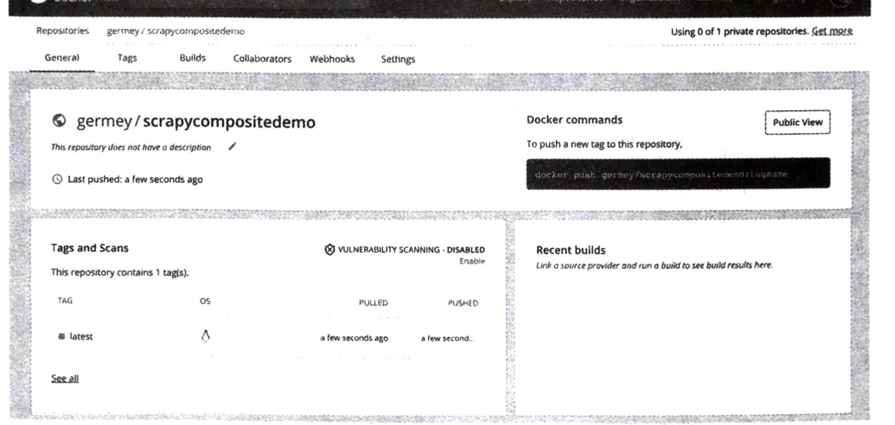
这个镜像可以供后面使用,如果我们想在其他主机上运行这个镜像,在主机上装好 Docker,运行 代理池、账号池、Redis 数据库后,按照同样的方式新建.env文件,可以直接执行如下命令: docker run --env-file .env germey/scrapycompositedemo 这样就会自动下载刚才我们所推送的镜像,然后读取环境变量并运行了,运行效果和刚才一模一样。
7. 总结
我们讲解了将 Scrapy 项目制作成 Docker 镜像并推送到 Docker Hub 的过程,接下来我们会介绍 Docker Compose 和 Kubernetes 的用法,来尝试部署和运行 Scrapy 项目。
17.5 Docker Compose 的使用
在上一节中,我们了解了将 Scrapy 项目打包为 Docker 镜像的方式,不过其中有一些不太方便的 地方。 - 构建镜像的命令比较烦琐而且难以记忆,比如需要额外添加一些配置选项。 - 如果需要同时启动多个 Docker 容器协同运行,仅使用 docker run 命令是难以实现的。 下面我们再来介绍一个工具 Docker Compose,使用它,我们可以方便地实现镜像的打包、容器的 协同管理。
1. Docker Compose
Docker Compose 是用于定义和运行多容器 Docker 应用程序的工具。通过它,我们可以使用 YAML 格式的文件来配置程序需要的所有服务,比如 YAML 文件里面定义了构建的目标镜像名称、容器启动 的端口、环境变量设置等,把这些固定的内容配置到 YAML 文件之后,我们只需要使用简单的 docker-compose 命令就可以实现镜像的构建和容器的启动了,非常方便。 接下来,我们尝试利用 Docker Compose 来构建上一节介绍的镜像吧。
2. 准备工作
首先,我们需要准备好上一节学习的所有内容,包括 ScrapyCompositeDemo 的代码以及对应的 Dockerfile,能正常构建 Docker 镜像。另外,我们还需要准备好账号池、代理池并能成功运行。 除了如上内容外,我们还需要安装好 Docker Compose,安装方法可以参考:https://setup.scrape. enter/docker-compose。安装好之后,我们就可以使用 docker-compose 命令了。
3. 创建 YAML 文件
首先,我们需要确保代理池在本级的 5555 端口上正常运行,账号池在本级的 6777 端口上正常运 行,具体的内容可以参考 15.13 节。 接下来,我们在 ScrapyCompositeDemo 根目录下创建一个 docker-compose.yaml 文件,内容如下:
version: "3" services: redis:
image: redis:alpinecontainer_name: redis ports:
"6379"
scrapycompositedemo: build: "." image: "germey/scrapycompositedemo" environment: ACCOUNTPOOL_URL: "http://host.docker.internal:6777/antispider7/random" PROXYPOOL_URL: "http://host.docker.internal:5555/random" REDIS_HOST: "redis://redis:6379" depends_on:
redis
首先,第一行我们指定了 version,其值为 3,即 Docker Compose 的版本信息。目前,绝大多数 情况下都将其指定为 3。
然后我们指定 services的配置,一个是redis,一个是 scrapycompositedemo,即启动的两个服务 一个是 Redis 数据库,一个是我们的Scrapy 爬虫项目 ScrapyCompositeDemo。 对于 Redis 来说,我们直接使用了已有的镜像来构建,所以直接指定了 image 字段,内容为 redis:alpine,这是一个公开镜像,直接下载并运行即可启动一个Redis服务。接下来,我们指定了 container_name,即redis:alpine 这个镜像启动之后的容器名称,我们就直接赋值为redis即可。当然, 也可以换其他的名称,然后就是运行端口,这里我们直接指定了运行端口是6379。 对于 Scrapy 爬虫项目来说,由于代码在本地,所以构建位置就直接指定为.,代表当前目录。接 着,我们指定了构建的目标镜像名称,这里就直接指定为我的Docker Hub 为该项目配置的镜像地址 germey/scrapycompositedemo,其中germey 是我的Docker Hub用户名,这里请自行替换成你的用户名。 接下来,我们利用 environment 来指定环境变量,还是上一节所述的内容。另外,我们还指定了 depends_on 配置,内容为redis,即该容器的启动需要依赖于刚才声明的redis服务,这样只有等 redis 对应的容器正常启动之后,该容器才会启动。 注意如果你想了解更多 Docker Compose 的配置选项,可以参考 Docker Compose 的官方文档:
https://docs.docker.com/compose/。4. 构建镜像
接下来,我们就可以利用docker-compose 命令来构建 Docker镜像了。在docker-compose.yaml 目 录下运行该命令即可: docker-compose build 运行结果类似如下: redis uses an image, skipping Building scrapycompositedemo
[+] Building 2.75 (11/11) FINISHED
=> [internal] load build definition from Dockerfile
=> => transferring dockerfile: 37B
=> [internal] load.dockerignore
=> => transferring context: 2B
=> [internal] load metadata for docker.io/library/python:3.7
=> [auth] library/python: pull token for registry-1.docker.io
=> [1/5] FROMdocker.io/library/python:3.7@sha256:0ba96071fe70b9cf6dd2247f7901e35961cba04459933c4301ad6a5930f9c2b9
=> [internal] load build context
=> => transferring context: 37.08kB
=> CACHED [2/5] WORKDIR /app
=> CACHED [3/5] COPY requirements.txt
=> CACHED [4/5] RUN pip install -U pip & pip install -r requirements.txt
=> [5/5] COPY
=> exporting to image
=> => exporting layers
=> => writing image sha256:b2f3f35e9e51f2b38eabc70c3a6a5f0eff1e8409a86e05259685b2ebb736515b
=> => naming to docker.io/germey/scrapycompositedemo这里就输出了构建镜像的整个过程,和上一节构建的过程非常相似,只不过我们不用再关心怎样 指定镜像名称,不用指定构建路径了。
5. 运行镜像
运行镜像也是十分简单的,我们也无须再指定环境变量、容器名称、容器运行端口等内容,只需 要一条命令就可以一下子启动 redis 和 scrapycompositedemo 这两个服务: docker-compose up
运行结果如下:
Starting redis ... done
Recreating scrapycompositedemo_scrapycompositedemo_1 ... done
Attaching to redis, scrapycompositedemo_scrapycompositedemo_1
redis | 1:C 31 Jul 2021 18:29:10.828 # oO0OoO0OoO0Oo Redis is starting oO0OoO0OoO0Oo
redis | 1:C 31 Jul 2021 18:29:10.828 # Redis version=6.2.3, bits=64, commit=00000000,
modified=0, pid=1, just started
redis | 1:C 31 Jul 2021 18:29:10.828 # Warning: no config file specified, using the
default config. In order to specify a config file use redis-server /path/to/redis.conf
redis | 1:M 31 Jul 2021 18:29:10.829 * monotonic clock: POSIX clock_gettime
redis | 1:M 31 Jul 2021 18:29:10.829 * Running mode=standalone, port=6379.
redis | 1:M 31 Jul 2021 18:29:10.830 # Server initialized
redis | 1:M 31 Jul 2021 18:29:10.830 * Ready to accept connections
scrapycompositedemo_1 | 2021-07-31 18:29:13 [scrapy.utils.log] INFO: Scrapy 2.5.0 started (bot:
scrapycompositedemo)
scrapycompositedemo_1 | 2021-07-31 18:29:13 [scrapy.utils.log] INFO: Versions: lxml 4.6.3.0, libxml2
2.9.10, cssselect 1.1.0, parsel 1.6.0, w3lib 1.22.0, Twisted 21.7.0, Python 3.7.11
...这里我们就可以看到,首先启动了redis服务,然后创建了 scrapycompositedemo 这个服务,接着 运行了 Scrapy 爬虫项目并开始爬取对应的数据,在爬取过程中同时在控制台输出了对应的日志内容。
6. 推送镜像
如果我们在本地测试镜像没有任何问题了,那接下来就可以把镜像推送到 Docker Hub 或其他的 Docker Registry 服务上了,这里依然使用docker-compose 所提供的命令即可: docker-compose push 是的,也是非常简洁明了的命令,运行结果如下: Pushing scrapycompositedemo (germey/scrapycompositedemo:latest)... The push refers to repository [docker.io/germey/scrapycompositedemo] 836160d4c5c0: Pushed f1408cfc4c45: Pushed 053b8bb0c2c1: Pushed 5ff6fa8a1637: Pushed 62499da5fab9: Mounted from library/python afa3e488a0ee: Mounted from library/python
latest: digest: sha256:8d13cb16cb77cafa50a9c96653b1593f6997cc6a5c9bb95abd1d8458454393d2 size: 3052执行完毕之后,我们指定的镜像就可以被推送到 Docker Hub 供其他主机下载运行了。
7. 总结
如此一来,我们就成功使用Docker Compose 来构建、运行、推送我们构建的Docker 镜像。正因 为Docker Compose 所提供的配置化功能,我们可以将 Docker 启动和构建所需的参数都写到 docker- compose.yaml 文件里面,我们只需要使用docker-compose 对应的命令就可以轻松完成想要的操作。 好,现在我们已经构建好镜像了。在下一节中,我们就来了解在 Kubernetes 里面如何运行镜像吧。
17.6 Kubernetes 的使用
前面我们已经学习了Docker镜像的搭建过程,另外还学习了 Docker Compose 工具的用法。我们 可以使用 Docker Compose 非常方便地启动 Docker 容器运行爬虫,然而这个过程距离真正的大规模运
维还是不够。 还是前几节的几个问题:
如何快速部署几十、上百、上千个爬虫程序并协同爬取? ■ 如何实现爬虫的批量更新? ■ 如何实时查看爬虫的运行状态和日志? 其实利用 Kubernetes,我们同样可以非常方便地解决上文提到的各个问题。 本节中,我们会首先了解 Kubernetes 的基本概念和原理、核心的组件和 Kubernetes 的基本使用方 式,以便为后文实现 Kubernetes 部署和管理 Scrapy 爬虫程序打下基础。
1. 准备工作
在本节开始之前,请确保已经对 Docker 等容器技术有了一定的了解,如果你没有相关的经验, 请先学习一下 Docker 和容器技术的相关知识。 另外,还需要在本机安装 Docker 并在本地启用 Kubernetes服务,具体的操作可以参考
https://setup.scrape.center/kubernetes。配置好 Kubernetes之后,我们就可以使用kubectl 命令来操作一个Kubernetes 集群了。
2. Kubernetes 简介
Kubernetes,简称K8s(K和s中间含有8个字母),它是用于编排容器化应用程序的云原生系统。 Kubernetes 诞生自Google,现在已经由CNCF(云原生计算基金会)维护更新。Kubernetes 是目前最 受欢迎的集群管理方案之一,可以非常容易地实现容器的管理和编排。 刚刚我们提到,Kubernetes 是一个容器编排系统。对于“编排”二字,我们可能不太容易理解其 中的含义。为了对它有更好的理解,我们先回过头来看看容器的定位以及容器解决了什么问题,不能 解决什么问题,然后了解下 Kubernetes 能够弥补容器哪些缺失的内容。 好,首先来看容器。最常见的容器技术就是 Docker了,它提供了比传统虚拟化技术更轻量级的 机制来创建隔离的应用程序的运行环境。比如对于某个应用程序,我们使用容器运行时,不必担心它 与宿主机之间产生资源冲突,不必担心多个容器之间产生资源冲突。同时借助于容器技术,我们还能 更好地保证开发环境和生产环境的运行一致性。另外,由于每个容器都是独立的,因此可以将多个容 器运行在同一台宿主机上,以提高宿主机的资源利用率,从而进一步降低成本。总之,使用容器带来 的好处有很多,可以为我们带来极大的便利。 不过单单依靠容器技术并不能解决所有问题,也可以说容器技术也引入了新的问题,比如说:
如果容器突然运行异常了,怎么办?
如果容器所在的宿主机突然运行异常了,怎么办? ■ 如果有多个容器,它们之间怎么有效地传输数据? ■ 如果单个容器达到了瓶颈,如何平稳且有效地进行扩容? ■ 如果生产环境是由多台主机组成的,我们怎样更好地决定使用哪台主机来运行哪个容器? 以上列举了一些单纯依靠容器技术或者单纯依靠 Docker 不能解决的问题,而Kubernetes 作为容 器编排平台,提供了一个可弹性运行的分布式系统框架,各个容器可以运行在Kubernetes平台上,容 器的管理、调度、部署、扩容等各个操作都可以经由 Kubernetes来有效实现。比如说,Kubernetes 可 以管理单个容器的生命周期,并且可以根据需要来扩展和释放资源。如果某个容器意外关闭, Kubernetes 可以根据对应的策略选择重启该容器,以保证服务正常运行。再比如说,Kubernetes 是一
个分布式平台,当容器所在的主机突然发生异常,Kubernetes可以将异常主机上运行的容器转移到其 他正常的主机上运行。另外,Kubernetes 还可以根据容器运行所需要占用的资源自动选择合适的主机 来运行。总之,Kubernetes 对容器的调度和管理提供了非常强大的支持,可以帮我们解决上述的诸多 问题。
3. Kubernetes 关键概念
下面我们来介绍 Kubernetes 中的关键概念,包括Node、Namespace、Pod、Deployment、Service、 Ingress 等,了解了这些,有助于我们更加得心应手地实现 Kubernetes 的管理和操作。
Node
Node,即节点,在Kubernetes中,节点就意味着容器运行的宿主机。因为Kubernetes 是一个集群, 所以我们可以把节点看作组成集群的一台台主机。 既然是集群,那么多个 Node 相互协作一定是一个需要解决的问题,到底应该听谁的呢?所以 Node 又分了 Master Node 和 Worker Node,其中 Master Node 可以认为是集群的管理节点,负责管理 整个集群,并提供集群的数据访问入口,在它之上运行着一些核心组件,如API Server 负责接收API指 令,Controller Manager 负责维护集群的状态,比如故障检测、自动扩展、滚动更新等。
Namespace
Namespace,即命名空间,对一组资源和对象的抽象集合。可以认为Namespace 是 Kubernetes 集 群中的虚拟化集群。在一个Kubernetes 集群中,可以拥有多个命名空间,它们在逻辑上彼此隔离。
Pod
Pod,它运行在Node上,是Kubernetes 的最小调度单位,也是Kubernetes 针对容器编排作出的设 计方案。 这时候大家可能有个疑问,为什么最小的调度单位不是容器,而是又另外设计了一个Pod的概念 呢?因为容器单独运行,这确实是没有问题的,但有时候几个容器是需要协同运行的,它们需要共享 同样的资源、同样的网络,比如说这里运行了一个MySQL容器,但这个容器在启动时需要进行一些 初始化的配置,比较好的设计就是单独有一个Sidecar 容器为这个MySQL 主容器进行初始化操作,所 以这个MySQL 容器就需要配有一个Sidecar容器,它们还需要共享相同的网络和资源。所以在容器的 基础上,Kubernetes 进一步抽象了一层,叫作 Pod。Pod里面是可以运行多个容器的,同一个Pod 里 面的容器可以共享资源、网络、存储系统。 通常情况下,我们不会单独显式地创建Pod对象,而是会借助于Deployment 等对象来创建。
Deployment
Deployment,即部署,利用它我们可以定义Pod的配置,如副本、镜像、运行所需要的资源等。 Deployment 在 Pod和 ReplicaSet 之上,提供了一个声明式定义方法,比如说我们声明一个 Deployment 并指定Pod副本数量为2,应用该Deployment 之后,Kubernetes 便会为我们创建两个Pod。 因此,我们只需要在 Deployment 中描述想要的目标状态是什么。Kubernetes有一个 Deployment Controller,它会帮我们将Pod 和ReplicaSet 的实际状态改变到我们想要的目标状态。
Service
设想这么一个场景,假如一个服务,我们在部署的时候声明了副本数量为2,即创建两个Pod, 每个Pod 都有自己在 Kubernetes 中的IP地址并在对应的端口上启动了服务,但这一组Pod的服务怎 么统一暴露给 Kubernetes 之外来访问呢?这就引入了Service的概念。
Service 是将运行在一组Pod 上的应用程序公开为网络服务的抽象机制。Service 相当于一个负载 均衡器,通过一些定义可以找到关联的一组Pod,当请求到来时,它可以将流量转发到对应的任一 Pod 上进行处理。所以对外来说,客户端不需要关心怎么调用具体哪个Pod的服务,Service 相当于在 Pod 之上的一个负载均衡器,对应的请求会由 Service 转发给Pod。
Ingress
Ingress 用于对外暴露服务,该资源对象定义了不同主机名(域名)及URL 和对应后端 Service的 绑定,根据不同的路径路由 HTTP 和HTTPS 流量。比如通过Ingress,我们可以配置哪个域名对应的 流量转发到哪个Service上,还可以配置一些HTTPS证书相关的内容。 以上我们就简单介绍了 Kubernetes 里面的部分基本组件,这些全新的概念其实还是比较难理解 的,接下来我们就通过一个实战例子来加深理解。另外,也强烈推荐查看 Kubernetes 的官方文档了解 更加详细的内容:https://kubernetes.io/docs/concepts/。
4. Kubernetes 案例上手
下面我们来用一个实际案例了解 Kubernetes 的部署过程。这里我们会介绍如何创建 Namespace, 如何使用 YAML来定义 Deployment 和Service,以及怎样访问 Service,通过这些操作,我们可以先对 Kubernetes 的操作有个简单的认识。 接下来的演示是基于Docker 自带的Kubernetes集群实现的,安装好 Docker之后,我们在 Docker 的设置面板中只需要勾选 Enable Kubernetes 即可在本地开启一个 Kubernetes 服务,如图17-12所示。
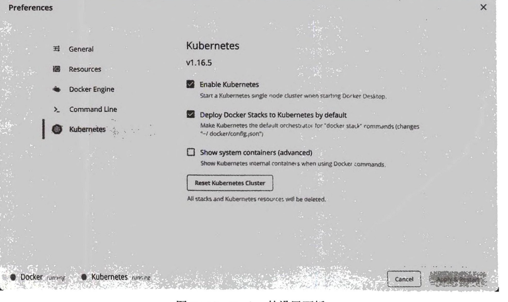
配置完成之后,可以发现左下角的Kubernetes 是绿色的running 状态,这就说明配置成功了。 kubectl 是用来操作 Kubernetes 的命令行工具,可以参考 https://kubernetes.io/zh/docs/tasks/tools/install-kubectl/来安装。安装完成之后,请将 Kubernetes Context 切换为本地 Kubernetes。 比如,我这边 Docker Desktop 创建的 Kubernetes 的Context 名称叫作 docker-desktop。如果你也使
用同样的方法创建集群，名字默认也是一样的，此时可以运行如下命令使用该Context: kubectl config use-context docker-desktop 运行之后，会有如下提示: Switched to context "docker-desktop". 如果你使用的是其他 Kubernetes集群，可以自行更改 Context 名称。 这时候我们可以使用kubectl命令来查看当前本地 Kubernetes 集群的运行状态。首先看下节点的 信息，命令如下: kubectl get nodes 类似的输出如下: NAME STATUS ROLES AGE VERSION docker-desktop Ready master 1d v1.16.6-beta.0 这里列出来了节点的相关信息:NAME 代表名称;STATUS 代表当前节点的状态,如果其值是 Ready 的话,代表节点状态正常;ROLES 代表角色，这里因为只有一个节点，所以它的 ROLES 就是 master; AGE 代表节点自创建以来到现在的时间;VERSION 代表当前 Kubernetes 的版本号。 接着,我们再来查看下 Namespace，命令如下: kubectl get namespaces 输出类似如下: NAME STATUS AGE
default Active 1dkube-node-lease Active 1d kube-public Active 1d kube-system Active 1d 这里列出了当前所有的Namespace，它们都是 Kubernetes 预置的Namespace。我们可以自行创建 一个 Namespace，将资源部署到新的Namespace下，比如创建一个叫作 service 的Namespace，命令 如下: kubectl create namespace service 运行结果如下: namespace/service created 如果看到如上提示,就说明 Kubernetes 已经创建好了。 这时候我们来创建一个示例 Docker 镜像。首先,新建一个文件夹并将其当作工作目录,在该工 作目录下创建一个app文件夹,其内创建一个main.py 文件,目录结构如下: ├── app │ └── main.py main.py 文件的内容如下:
from fastapi import FastAPIapp = FastAPI()@app.get('/')
def index():
return 'Hello World'这是 FastAPI 编写的一个服务,通过代码可以看出,这里定义了一个路由,访问根路径就可以返 回 Hello World。
接着,我们在 app同级目录下创建一个Dockerfile 文件,目录树结构如下: Dockerfile app main.py Dockerfile 的内容如下: FROM python:3.7 RUN pip install fastapi uvicorn EXPOSE 80 COPY./app/app CMD ["uvicorn", "app.main:app", "--host", "0.0.0.0", "--port", "80"] 接下来,我们可以在 Dockerfile 所在文件夹下运行命令构建一个 Docker 镜像,如: docker build -t testserver. 这样一个镜像就构建好了。我们来运行一下试试看: docker run -p 8888:80 testserver 这里我们运行了当前的镜像,启动了一个容器,容器本身是在80端口上运行的。由于我们设置 了端口映射,将宿主机的 8888 端口转发到容器的80端口,因此我们在浏览器中打开
http://localhost:8888/,就可以看到如图17-13所示的结果。这说明本镜像是没有任何问题的。 接下来,我把镜像推送到 Docker Hub。先修改镜像名称,然后推送即可: docker tag testserver germey/testserver docker push germey/testserver 这里请自行修改 Docker Hub 的用户名,将germey 替换为你自己的用户名。 如果出现类似下面的结果,就说明推送成功了: The push refers to repository [docker.io/germey/testserver] 0c80be9761b3: Layer already exists a4b0f6a9292c: Layer already exists a1f2f42922b1: Layer already exists 4762552ad7d8: Layer already exists
latest: digest: sha256:b92c66daf4627eb069dc3343e9a9c3d24d6b122db47e847c4deb52dfa5b2f2e0 size: 2636当然,你也可以选择不推送自己的镜像,直接使用我的镜像 germey/testserver 也是没问题的。 好,接下来让我们创建一个YAML文件,叫作deployment.yaml,其内容如下:
apiVersion: apps/v1
kind: Deploymentmetadata:
name: testserver
namespace: servicelabels:
app: testserverspec:
replicas: 3selector: matchLabels:
app: testservertemplate: metadata: labels:
app: testserverspec: containers:
name:testserver
image: germey/testserverports:
containerPort: 80 这里我们定义了一个 Deployment 对象,一些配置项如 kind:其值就是 Deployment,代表我们声明的是 Deployment 对象。
metadata:定义了 Deployment 的基本信息。 name: Deployment的名称,我们可以任取,这里也取名为 testserver。 namespace:命名空间,这里就使用刚才我们所创建的service 这个命名空间。 ■ labels: 声明了一些标签,是一些键值对的形式,可以任意取值,它旨在用于指定对用户有 意义且相关的对象的标识属性。 spec:声明该 Deployment 对象对应的Pod的基本信息。 ■ replicas:这里指定为3,这就声明了需要创建三个Pod,即创建三个 Pod副本。 selector:声明了该 Deployment 如何查找要管理的Pod,这里通过 matchLabels 指定了一 个键值对,这样符合该键值对的Pod 就归属该 Deployment管理。另外,还有一些更复杂的 匹配,如使用 matchExpressions 匹配某个表达式规则。 ■ template:声明了 Pod里面运行的容器的信息,其中 metadata 里面声明了Pod的labels, 这和上述 selector 的 matchLabels 匹配即可。containers 字段指定运行容器的配置,其中 包括容器名称、使用的镜像、容器运行端口等。 通过如上配置,我们就完成了Deployment 的声明。现在我们来执行一下部署,此时可以运行如 下命令: kubectl apply f deployment.yaml 这里 apply 命令就代表 kubectl 应用该项配置,-f代表文件选项,后面要跟一个文件路径,即 deployment.yaml。 运行结果类似如下: deployment.apps/testserver created 如果出现这样的提示,就说明该部署已经生效了。 接着我们可以用如下命令来看下Pod的运行状态: kubectl get pod -n service 这里注意我们需要使用-n指定 Namespace,运行结果类似如下: NAME testserver-685978f9f9-1j4v6 testserver-685978f9f9-q6v5k testserver-685978f9f9-tspzz READY STATUS RESTARTS AGE 1/1 Running 0 1m 1/1 Running 0 1m 1/1 Running 0 1m 可以看到,这里创建了3个Pod(就是刚才 replicas 参数所指定的3),而且都是 Running 状态。
好,现在 Pod已经创建好了,接下来我们需要将服务通过 Service 暴露出来。 接下来,我们声明一个 Service 对象,再创建一个service.yaml 文件,内容如下:
apiVersion: v1
kind: Servicemetadata:
name: testserver
namespace: servicespec:
type: NodePortselector:
app: testserverports: - protocol: TCP
port: 8888
targetPort: 80这里我们定义了一个Service 对象,部分配置项如下。
kind:其值就是 Service,代表我们声明的是 Service 对象。
metadata: 定义了 Service 的基本信息。 - name: Service 的名称,我们可以任取,这里也取名为 testserver。它和其他对象重名,这 是不冲突的,只要在一个命名空间下没有其他相同名称的 Service 即可。 - namespace: 表示命名空间,这里就使用刚才我们所创建的 service 这个命名空间。
spec: 声明该 Service 对象对应的Pod的基本信息。 - selector: 声明该 Service 如何查找要关联的Pod,这里通过 selector 指定了一个键值对, 这样所有带有 app为testserver 标签的Pod 都会被关联到这个Service上。 - ports: 声明该 Service 和Pod的通信协议,这里指定为TCP。同时,port 指明了Service 的 运行端口,这里声明为8888,但是 targetPort 指的是Pod 内容器的运行端口。由于在 Deployment 中容器是运行在80端口的,所以targetPort 指定为80。
现在我们再部署这个 Service 对象,其命令如下: kubectl apply -f service.yaml
运行结果如下: service/testserver created
这就表明 Service 已经创建成功了。 接下来,我们其实是仍然不能访问这个 Service的。要访问的话,可以通过端口转发的方式将服 务端口映射到宿主机,或者修改 Service 相关的配置,把 Service 的类型修改为 NodePort 或者将 Service 进一步通过Ingress 暴露出来。这里我们直接采取端口转发的方式将 Kubernetes 中的Service 转 发到本机的某个端口上,命令如下: kubectl port-forward service/testserver 9999:8888 -n service
这里我们将宿主机的9999端口转发到 Service的8888端口,这样我们在本地访问9999端口就相 当于访问 Kubernetes 的Service的8888端口了。
运行结果类似如下:
Forwarding from 127.0.0.1:9999 -> 80
Forwarding from [::1]:9999 -> 80这里输出的其实是 9999 映射到80,因为这里显示的是容器的端口,容器的运行端口是80。
这时候在浏览器中打开 http://localhost:9999/，即可看到刚才部署的服务，如图 17-14 所示。
5. 总结
到此，我们通过声明 Deployment 和 Service 实现了一个服务的部署，同时体会了 Kubernetes 的部 署流程。
在后面，我们会介绍利用 Kubernetes 进行 Scrapy 分布式爬虫部署的方案。
17.7 用 Kubernetes 部署和管理 Scrapy 爬虫
在上一节中，我们已经学习了 Kubernetes 的基本操作。本节中我们进行一个实战练习，将代理池、 账号池、Scrapy 爬虫项目部署到 Kubernetes 集群上来运行。
1. Namespace
在开始之前，我们首先新建一个 kubernetes 文件夹并将命令行切换到该文件夹。在该文件夹中， 我们会创建多个 Kubernetes 的 YAML 部署文件用于资源部署。
另外，我们需要新建一个 Namespace，叫作 crawler，我们将所有的资源都部署到这个 Namespace 下。创建 Namespace 的命令如下:
kubectl create namespace crawler创建成功后，我们就开始部署吧。
2. Redis
首先，我们可以先进行 Redis 数据库的部署，因为代理池、账号池、Scrapy 爬虫项目都是以 Redis 为基础的。
此外我们部署一个最基础的单实例 Redis 数据库。首先在 kubernetes 文件夹下创建一个 redis 文件 夹，再在 redis 文件夹中创建一个 deployment.yaml 文件，其内容如下:
apiVersion: apps/v1
kind: Deployment
metadata:
labels:
app: redis
name: redis
namespace: crawler
spec:
replicas: 1
selector:
matchLabels:
app: redis
template:
metadata:
labels:
app: redis
spec:containers:
image: redis:alpine
name: redis
resources:
limits:
memory: "2Gi"
cpu: "500m"
requests:
memory: "500Mi"
cpu: "200m"
ports:
- containerPort: 6379这里我们声明了一个 Deployment,并在 containers 字段里面使用 redis:alpine 这个镜像进行部署, replicas 实例个数设置为 1,端口设置为 6379。 接下来,在 redis 文件夹下创建一个 service.yaml 文件,其内容如下:
apiVersion: v1
kind: Service
metadata:
labels:
app: redis
name: redis
namespace: crawler
spec:
ports:
- name: "6379"
port: 6379
targetPort: 6379
selector:
app: redis这里的 Service 同样声明使用 6379 端口,targetPort 需要和 Deployment 的 containerPort 对应起 来,也是 6379。 接下来,我们切换到 redis 文件夹的上级文件夹,即 kubernetes 文件夹,执行如下命令进行 Redis 的 部署:
kubectl apply -f rediskubectl apply -f redis/deployment.yaml
kubectl apply -f redis/service.yaml可以看到如下的运行结果:
deployment.apps/redis created
service/redis created稍微等待片刻,Redis 数据库就部署成功了。 我们可以使用如下命令查看 Redis 的部署状态:
kubectl get deployment/redis -n crawler运行结果类似如下:
NAME READY UP-TO-DATE AVAILABLE AGE
redis 1/1 1 1 15s这个结果表明刚才声明的 Deployment 在 Kubernetes 的部署情况,我们可以看到 READY 这一列的结果是 1/1,这说明期望部署 1 个 Redis 实例。现在已经部署了 1 个实例,所以已经部署成功了。 如果你看到的结果不是这样的,可以耐心等待一会,可能现在 Kubernetes 还在下载 Redis 相关镜
像,你可以使用kubectl 命令查看相关 Pod运行状态。但如果长时间都无法部署成功,请检查 Kubernetes 日志。 另外,为了方便学习和操作,部署的仅仅是最基础的Redis 数据库实例,并没有配置 Redis 集群, 也没有配置持久化存储。在实际生产环境中推荐使用 Helm 部署 Redis集群,具体的操作可以参考
3. 代理池
https://github.com/bitnami/charts/tree/master/bitnami/redis。Redis 数据库部署好了,接下来就开始部署代理池了。 在 kubernetes 文件夹下新建 proxypool 文件夹,再在 proxypool 文件夹下创建 deployment.yaml 文 件,其内容如下:
apiVersion: apps/v1
kind: Deployment
metadata:
labels:
app: proxypool
name: proxypool
namespace: crawler
spec:
replicas: 1
selector:
matchLabels:
app: proxypool
template:
metadata:
labels:
app: proxypool
spec:
containers:
- env:
- name: REDIS_HOST
value: 'redis.crawler.svc.cluster.local'
- name: REDIS_PORT
value: '6379'
image: germey/proxypool
name: proxypool
resources:
limits:
memory: "500Mi"
cpu: "300m"
requests:
memory: "500Mi"
cpu: "300m"
ports:
- containerPort: 5555和Redis 的 Deployment 声明类似,这里我们按照同样的格式声明了代理池的Deployment,这里镜 像使用的是 germey/proxypool,即我的Docker Hub上的代理池镜像,当然这里你也可以自行替换成你 的镜像。另外值得注意的是,这里通过 env 声明了两个环境变量,指定了 Redis的链接地址,其中 REDIS_HOST 的值是redis.crawler.svc.cluster.local,这个值是有一定规律的,是Kubernetes 根据我 们部署的 Service 和 Namespace 名称自动生成的,其格式是<service-name>.<namespace-name>.svc.
<cluster-domain>。一般情况下 cluster-domain 的值为 cluster.local,而此时 Namespace 的名称为crawler, Redis的Service 的名称是redis,所以最后的结果就是 redis.crawler.svc.cluster.local。 在Kubernetes 其他容器里,可以通过这样的 Host访问其他容器。REDIS_PORT这里就是 Redis Service 的 运行端口,即6379。另外,这里还指明了容器运行端口 containerPort 为5555。 接下来,再创建一个对应的 Service,在proxypool 文件夹下新建 service.yaml,其内容如下:
apiVersion: v1
kind: Servicemetadata: labels:
app: proxypool
name: proxypool
namespace: crawlerspec: ports: - name: "5555"
port: 5555
targetPort: 5555selector:
app: proxypool还是同样的格式,这里声明了Service 的运行端口还是5555,targetPort 和 containrPort 对应起 来,也是5555。 接下来,执行如下命令进行部署: kubectl apply -f proxypool 运行成功的结果类似如下: deployment.apps/proxypool created service/proxypool created 和 Redis 类似,这里使用如下命令即可查看代理池的部署状态: kubectl get deployment/proxypool -n crawler 如果出现类似如下结果,就说明部署成功了: NAME READY UP-TO-DATE AVAILABLE AGE proxypool 1/1 1 1 63s 此时我们可以通过 kubectl 的port-forward 命令将 Kubernetes 里面的服务转发到本地测试,执行 如下命令: kubectl port-forward svc/proxypool 8888:5555 -n crawler port-forward 命令可以创建本地和 Kubernetes 服务的端口映射,这里指定了转发的服务为 svc/proxypool, svc 就是 Service 的意思,端口映射配置为8888:5555。因为我们部署的代理池 Service 运行端口是5555,这里我们将其转发到本机的8888 运行之后,会有类似如下的输出结果:
Forwarding from 127.0.0.1:8888 -> 5555
Forwarding from [::1]:8888 -> 5555此时我们在本机浏览器上打开http://localhost:8888/ random,就可以直接访问到代理池的API 服务了,如图17-15所示。
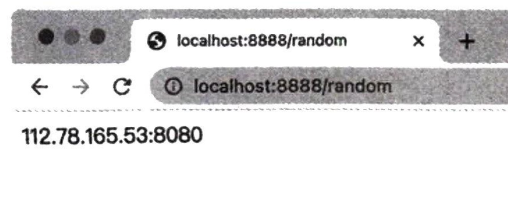
这就表明代理池正在运行并能正常提供API 服务。 验证完毕之后,停止如上命令即可,这不会对Kubernetes 里面的代理池服务产生任何影响。
4. 账号池
账号池和代理池的部署非常相似。在kubernetes 文件夹下创建 accountpool 文件夹,在accountpool 文件夹下创建 deployment.yaml 文件,其内容如下:
apiVersion: apps/v1
kind: Deploymentmetadata: labels:
app: accountpool
name: accountpool
namespace: crawlerspec:
replicas: 1selector: matchLabels:
app: accountpooltemplate: metadata: labels:
app: accountpoolspec: containers: - env: - name: REDIS_HOST value: 'redis.crawler.svc.cluster.local' - name: REDIS_PORT value: '6379' - name: API_PORT value: '6777' - name: WEBSITE
value: antispider7
image: germey/accountpool
name: accountpoolresources: limits: memory: "500Mi" cpu: "300m" requests: memory: "500Mi" cpu: "300m" ports: - containerPort: 6777
这里的原理和代理池一样,它指定了 REDIS_HOST 和 REDIS_PORT,同时额外指定了 API_PORT 和 WEBSITE 这两个环境变量,并设置了 containerPort 为6777。
再创建 service.yaml 文件,其内容如下:
apiVersion: v1
kind: Servicemetadata: labels:
app: accountpool
name: accountpool
namespace: crawlerspec: ports: - name: "6777"
port: 6777
targetPort: 6777selector:
app: accountpool这里指定 Service 的运行端口为6777。
执行如下命令进行部署: kubectl apply -f accountpool
运行结果类似如下: deployment.apps/accountpool created service/accountpool created
这就说明部署命令执行成功了,稍等片刻,账号池也会部署成功。 同样,我们也可以使用同样的命令来将账号池服务转发到本地进行验证: kubectl port-forward svc/accountpool 7777:6777 -n crawler 运行结果类似如下:
Forwarding from 127.0.0.1:7777 -> 6777
Forwarding from [::1]:7777 -> 6777此时在本机浏览器打开 http://localhost:7777/antispider7/random,如果能正常获取到结果,就说明 账号池也正常运行了。
5. 爬虫项目
因为爬虫项目依赖账号池和代理池,所以这里我们最后才进行部署。在 kubernetes 文件夹下创建 scrapycompositedemo 文件夹,并在此文件夹下创建 deployment.yaml 文件,其内容如下:
apiVersion: apps/v1
kind: Deploymentmetadata: labels:
app: scrapycompositedemo
name: scrapycompositedemo
namespace: crawlerspec:
replicas: 1selector: matchLabels:
app: scrapycompositedemotemplate: metadata: labels:
app: scrapycompositedemospec: containers: - env: - name: ACCOUNTPOOL_URL value: 'http://accountpool.crawler.svc.cluster.local:6777/antispider7/random' - name: PROXYPOOL_URL value: 'http://proxypool.crawler.svc.cluster.local:5555/random' - name: REDIS_URL value: 'redis://redis.crawler.svc.cluster.local:6379'
image: germey/scrapycompositedemo
name: scrapycompositedemoresources: limits: memory: "500Mi" cpu: "300m" requests: memory: "500Mi" cpu: "300m" 这里我们配置了 germey/scrapycompositedemo 作为镜像,同时配置了 ACCOUNTPOOL_URL、PROXYPOOL_URL 以及 REDIS_URL,这里的Host都设定为了redis.crawler.svc.cluster.local,端口都是各个服务的运 行端口。 因为 Scrapy 爬虫项目并不提供 HTTP 服务,所以我们只需要部署 Deployment 即可。运行如下命 令执行部署: kubectl apply -f scrapycompositedemo 我们可以执行如下命令查看部署状态:
kubectl get deployment/scrapycompositedemo -n crawler 如果出现类似如下结果,就说明部署成功,并正常运行了: NAME READY UP-TO-DATE AVAILABLE AGE scrapycompositedemo 1/1 1 1 2m46s
另外,我们还可以查看Pod的状态: kubectl get pod -n crawler 运行结果类似如下: NAME READY STATUS RESTARTS AGE accountpool-57d498655f-6wv74 1/1 Running 0 17m proxypool-8646f8bcb7-64z98 1/1 Running 0 22m redis-5689c9b5cb-zdft2 1/1 Running 0 44m scrapycompositedemo-cbffd87dd-x8pj8 1/1 Running 0 3m54s
可以看到,前面部署的所有实例都正常运行了。 怎么知道爬虫有没有爬取到数据呢?我们可以运行命令查看日志: kubectl logs scrapycompositedemo-cbffd87dd-x8pj8--tail=20 -n crawler 这里我们通过 logs 命令输出一个Pod的日志,这里Pod 的名称需要根据上面命令的输出结果得 到。另外,这里指定了--tail=20代表输出最后20条日志,运行结果类似如下:
{'content':'我当时的感觉??和电影一模一样。电影不如小说写的。','id': '2297019006'},
{'content':'突然想起这本书,还是初中生的时候,看电影之前读的(当时比起电影,还是读书更吸引我),读的时候觉得故事还可以,好像建立了一个更庞大的世界观(虚构的世界秩序)来着。如果让作者自己来拍,可能 又是另一部《爵迹》。',
'id': '2281425740'},
{'content':'真的不知道在说啥,电影也不知道在表达啥????', 'id': '2277859717'}],
'cover': 'https://img3.doubanio.com/view/subject/l/public/s1463073.jpg',
'id': '1449981',
'introduction': '',
'isbn': '9787020054398',
'name':'无极',
'page_number': 153,
'price': '24.00元,
'published_at': '2006-01-20T16:00:00Z',
'publisher':'人民文学出版社',
'score': '6.2',
'tags':['郭敬明','无极','小说','奇幻','电影小说','小四','青春文学','青春'],
'translators': []}
2021-03-13 16:36:23 [middlewares.proxy] DEBUG: set proxy 34.90.54.218:80可以看到,Scrapy 爬虫项目正常运行并爬取到了数据。
6. Dashboard
我们可能发现,每次都要通过命令查看日志和运行状态非常烦琐,有没有更直观的查看 Kubernetes 资源的工具?当然有,我们可以直接使用 Kubernetes 推荐的 Dashboard。 官方文档链接为:https://kubernetes.io/docs/tasks/access-application-cluster/web-ui-dashboard/。我们 可以试着部署一下: kubectl apply -f https://raw.githubusercontent.com/kubernetes/dashboard/v2.2.0/aio/deploy/recommended.yaml
namespace/kubernetes-dashboard created serviceaccount/kubernetes-dashboard created service/kubernetes-dashboard created secret/kubernetes-dashboard-certs created secret/kubernetes-dashboard-csrf created secret/kubernetes-dashboard-key-holder created configmap/kubernetes-dashboard-settings created role.rbac.authorization.k8s.io/kubernetes-dashboard created clusterrole.rbac.authorization.k8s.io/kubernetes-dashboard created rolebinding.rbac.authorization.k8s.io/kubernetes-dashboard created clusterrolebinding.rbac.authorization.k8s.io/kubernetes-dashboard created deployment.apps/kubernetes-dashboard created service/dashboard-metrics-scraper created deployment.apps/dashboard-metrics-scraper created
然后执行如下命令:
kubectl proxy
通过本地访问 http://localhost:8001/api/v1/namespaces/kubernetes-dashboard/services/https:kubernetes- dashboard:/proxy/,即可看到一个Dashboard 登录界面,如图17-16所示。
此时可以参考官方文档的说明获取登录的token,参考命令如下:
kubectl -n kubernetes-dashboard get secret $(kubectl -n kubernetes-dashboard get sa/kubernetes-dashboard -o
jsonpath="{.secrets[0].name}") -o go-template="{{.data.token | base64decode}}"可以看到会得到一个 token,类似的内容如下:
eyJhbGciOiJSUzI1NiIsImtpZCI6IjVRQ3FrMkFuMHZmWUV6VnpPWVRhMnZPd2pQVmFhZmV1YTNYZS1Xdm5xeHcifQ.eyJpc3MiOiJrdW Jlcm5ldGVzL3NlcnZpY2VhY2NvdW50Iiwia3ViZXJuZXRlY3MuaW8vc2VydmljZWFjY291bnQvc2VydmljZWFjY291bnQvbmFtZXNwYWN lIjoiadWJlcm5ldGVzLWRhc2hib2FyZCIsImt1YmVybmV0ZXMuaW8vc2VydmljZWFjY291bnQvc2VjcmV0Lm5hbWUiOiJrdWJlcm5ldGV zLWRhc2hib2FyZC10b2tl bi1wc3MyaiIsImt1YmVybmV0ZXMuaW8vc2VydmljZWFjY291bnQvc2VydmljZS1hY2NvdW50Lm5hbWUiOiJrdWJlcm5ldGVzLWRhc2hp Ym9hcmQiLCJrdWJlcm5ldGVzLWRhc2hib2FyZCIsImt1YmVybmV0ZXMuaW8vc2VydmljZWFjY291bnQvc2VydmljZS1hY2NvdW50LnVpZ CI6ImZmOWJkNWIzLTM1OWItNDk4Ni05Mm VkLTgzN2NhNzEyZDZlMyIsInN1YiI6InN5c3R1bTpzZXJ2aWNlYWNjb3VudDprdWJlcm5ldGVzLWRhc2hib2FyZDprdWJlcm5ldGVzLWR hc2hib2FyZCJ9.Bpsdw5gA7DXDv2gwRcoz_ODri1kVZ7RkAxu4EmNC2CT8K8BGmbennI_1SVLLoe2u7gHjCLU24MZFB7Dgj2fasvCJhKQ vojvbRvJA-n09dDL1PufF1pmQ2sGRX-MrbEOzl4QiKE_puwr8PsmRORDKVs24ytfCIS2rkgt6MDBDB6mAMjexSCUzScPnfWF1tTkZBNVH DhHhquZpL3wvrA9SJLdSHg7WS8-vV3yg3ilrt7VC8oimR3Lcsekav4gvpqWlSd_6Hdxq212euLEyBbyTQ1tBLoaJMASOO_GkF DRbdbY72cHF1bc1P6EMJD3EPOs09rU-g58KyiToqQ
接下来,将输出的 token 粘贴到 Dashboard 的登录页面中,即可登录成功,如图17-17 所示。
将命名空间切换为crawler,即可看到各个服务的运行状态,如图17-18所示。
比如,这里可以看到 Deployments、Replica Sets 和 Pods 的运行状态都是正常的,颜色为绿色。 我们还可以进一步查看 Scrapy 爬虫项目对应的Pod,如图17-19所示。
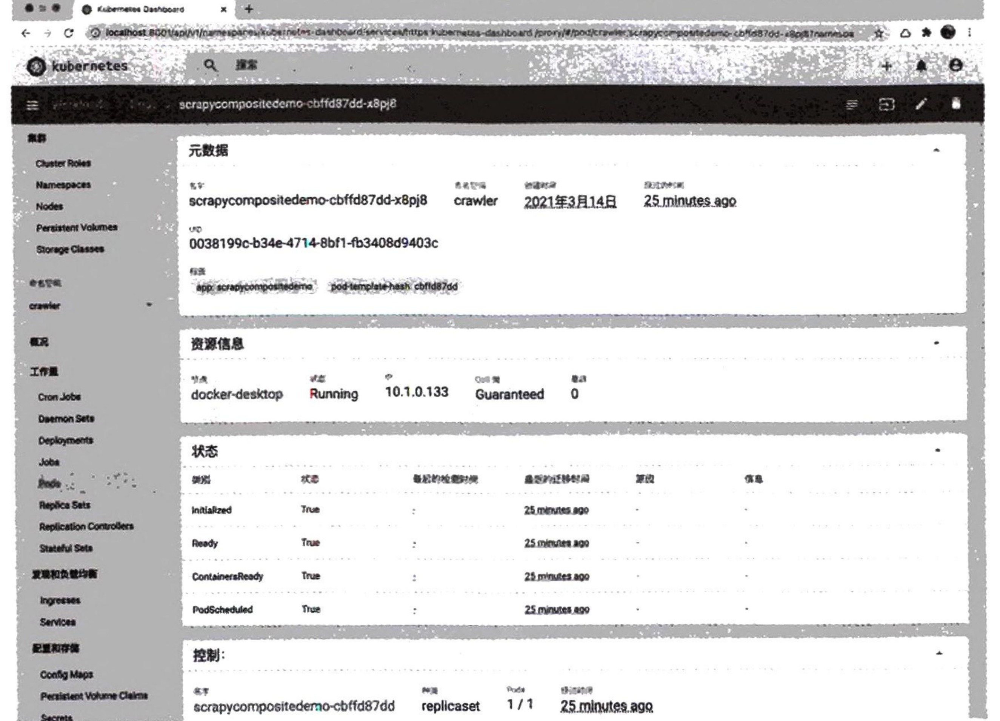
这里展示了Pod的详细信息,比如运行状态、时间、元数据等。另外,点击右上角(右起第四个) 按钮,即可查看该Pod 对应的运行日志,如图17-20所示。
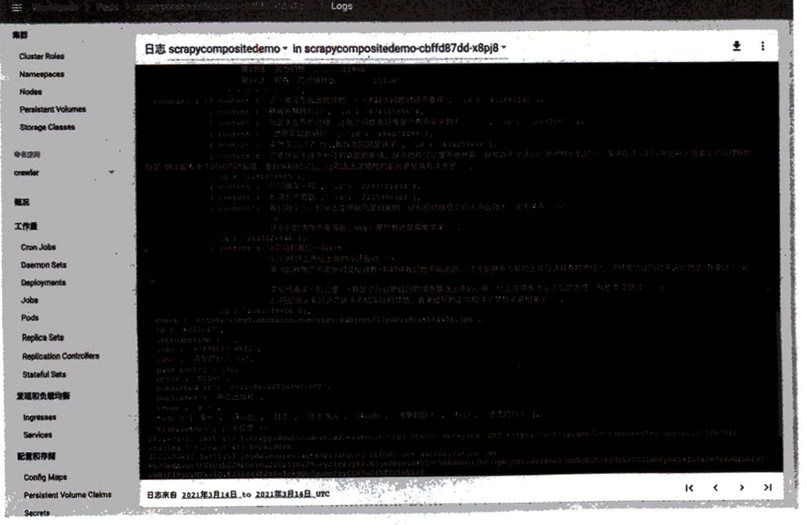
可以看到,它在正常运行,并将爬取到的数据输出到了控制台。 另外,我们还可以增删爬虫的实例数。可以回到Deployments 的管理页面,选择“规模”选项卡, 如图17-21 所示。
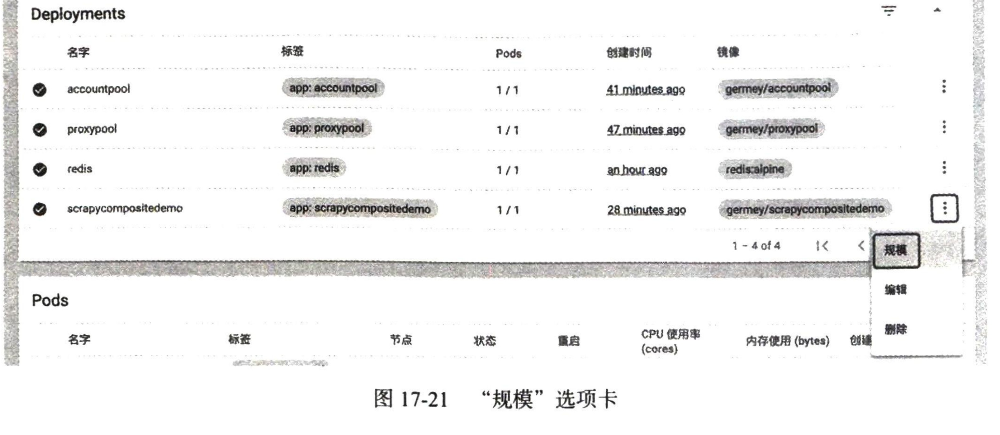
比如将目标副本数量调整为5,如图17-22所示。
缩放资源
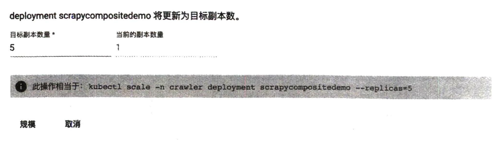
● 此操作相当于: kubectl scale -n crawler deployment scrapycompositedemo --replicas-5 规模 取消 当然,我们也可以使用命令行实现资源的放缩,具体如下: kubectl scale -n crawler deployment scrapycompositedemo --replicas=5 执行之后,我们可以看到 Kubernetes 又新创建了4个Pod。我们可以在 Dashboard 中直观地看到 新创建的Pod,如图17-23所示。 这样就相当于创建了5个爬虫实例,因为它们共享了一个Redis 队列,所以它们就是5个分布式 爬虫实例,可以协同运行。 如果我们想增加或减少爬虫数量,只需要更改目标副本数量即可,比如将其修改为100,就相当 于我们部署了100个爬虫实例,而且这100个爬虫是协同爬取的。是不是非常方便?
17.8 Scrapy 分布式爬虫的数据统计方案
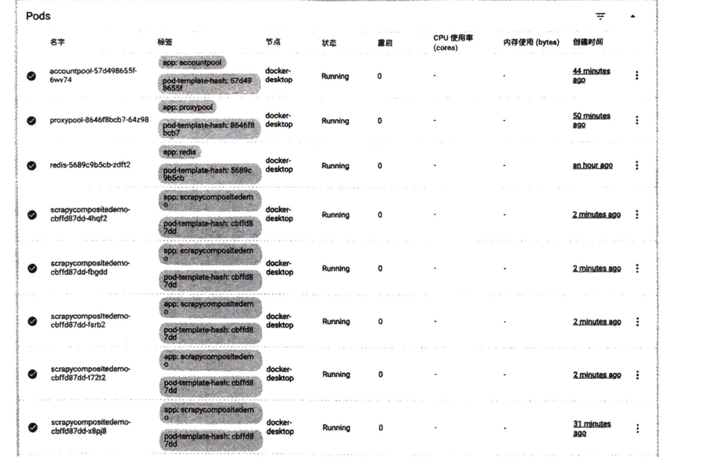
7. 总结
以上我们就通过一个实战练习实现了分布式爬虫在 Kubernetes 中的部署,并且还可以非常方便地 使用 Kubernetes 对 Scrapy 爬虫项目进行管理。相比 Scrapyd 来说,Kubernetes 的功能更加强大,是一 个绝佳的管理 Scrapy 爬虫项目的利器。
本节涉及的知识点比较多,需要好好消化和练习。 本节代码详见 https://github.com/Python3WebSpider/ScrapyCompositeDemo/tree/docker,注意是 docker 分支。
在上一节中,我们已经学习了如何利用 Kubernetes 进行 Scrapy 爬虫的部署,并将其对接了分布式 的实现,对接了代理池、账号池,以顺利地实现数据抓取。
但这时候我们又遇到了一个难题,怎样监控各个 Scrapy 爬虫的爬取情况呢?比如,这时候我部署 了10个 Pod 来运行 Scrapy 分布式爬虫,它们基于 Scrapy-Redis 进行协同爬取,但我们并无法知晓它 们一分钟爬取了多少条数据,成功、失败、重试了多少次,难道要通过分析日志得出来吗?
另外,假如我们已经能成功获取了这些数据,又想进一步把这些数据可视化出来,做一个实时大屏 图表,用什么方式实现比较好?需要自己额外写代码实现吗?还是说已经有了非常成熟的解决方案? 围绕这两个问题,我们来探索 Scrapy 爬虫监控方案。
1. 准备
在本节开始之前,请确保已经完成了上一节的所有内容并能透彻地理解其原理,另外还需要你能
较为熟练地完成利用 Kubernetes 部署 Scrapy 爬虫和其他服务的操作。
2. 数据统计
我们在 Scrapy 运行结果中会注意到它会时不时输出类似这样的结果:
2021-03-15 21:52:06 [scrapy.extensions.logstats] INFO: Crawled 33 pages (at 33 pages/min), scraped 172 items(at 172 items/min) 这里显示了 Scrapy爬虫的统计结果,里面包含当前Spider的页面(page)爬取速度和结果(item) 的提取速度,本例中一分钟爬取了33个页面,提取了172个结果。 然而,当前我们基于Scrapy-Redis 通过前面几节的方案实现了分布式爬虫之后,仔细观察会发现 每个爬虫输出的结果都是各自的统计结果,比如其中一个 Spider 机器性能和网络比较好,爬取速度快, 那么它的统计结果就更高,表现不太好的Spider的统计结果就差一些。这些Spider 的统计信息都是独 立的、互不影响的,数据也各不相同。 这是为什么呢? 回想一下,之前 Scrapy-Redis实现分布式爬虫时,我们有两项关键配置:
SCHEDULER = "scrapy_redis.scheduler.Scheduler"
DUPEFILTER_CLASS = "scrapy_redis.dupefilter.RFPDupeFilter"这里我们分别配置了 Scheduler 和 RFPDupeFilter,其中 Scheduler 可以实现所有请求通过 Redis 队列共享,RFPDupeFilter 可以实现去重指纹通过Redis 集合共享。然而统计信息呢?有哪里配置共享 吗?并没有,因此每个 Spider 都是各统计各的,数据各不相干。 这样就遇到了一个问题,统计信息不同步而且很分散,这么多Scrapy 爬虫究竟爬取了多少数据也 无从得知。如果通过日志来进行数据收集和统计,这个难度和工作量也不小,而且不精确。 所以,有没有什么简单方法呢? 当然有,按照 Scheduler 和 RFPDupeFilter的思路,将统计信息也通过Redis共享不就可以了吗?
3. 实现原理
要实现这个功能,我们需要用到 Scrapy的一个组件,叫作 Stats Collection,翻译过来可以叫统计 信息收集器,它是一种 Scrapy的Extension,即扩展组件。 Scrapy 通过 Stats Collection 来收集键值对类型的统计信息,其中值一般都是计数器,这么多键值 对构成了一个统计表,可以理解为Python中的集合。比如上述例子中的爬取了多少页面,提取了多少 结果,这两个信息是可以通过Stats Collection 来保存的。 如果说得更直观一点,在Scrapy 爬虫运行完成时,想必我们还注意到过类似如下的统计信息:
{'downloader/request_bytes': 2925,
'downloader/request_method_count/GET': 11,
'downloader/request_count': 11,
'downloader/response_bytes': 23406,
'downloader/response_count': 11,
'downloader/response_status_count/200':10,
'downloader/response_status_count/404': 1,
'elapsed_time_seconds': 3.917599,
'finish_reason': 'finished',
'finish_time': datetime.datetime(2021, 3, 15, 14, 1, 36, 275427),
'item_scraped_count': 100,
'log_count/DEBUG': 111,
'log_count/INFO': 10,
'memusage/max': 55242752,
'memusage/startup': 55242752,较为熟练地完成利用 Kubernetes 部署 Scrapy 爬虫和其他服务的操作。
2. 数据统计
我们在 Scrapy 运行结果中会注意到它会时不时输出类似这样的结果:
2021-03-15 21:52:06 [scrapy.extensions.logstats] INFO: Crawled 33 pages (at 33 pages/min), scraped 172 items(at 172 items/min) 这里显示了 Scrapy爬虫的统计结果,里面包含当前Spider的页面(page)爬取速度和结果(item) 的提取速度,本例中一分钟爬取了33个页面,提取了172个结果。 然而,当前我们基于Scrapy-Redis 通过前面几节的方案实现了分布式爬虫之后,仔细观察会发现 每个爬虫输出的结果都是各自的统计结果,比如其中一个 Spider 机器性能和网络比较好,爬取速度快, 那么它的统计结果就更高,表现不太好的Spider的统计结果就差一些。这些Spider 的统计信息都是独 立的、互不影响的,数据也各不相同。 这是为什么呢? 回想一下,之前 Scrapy-Redis实现分布式爬虫时,我们有两项关键配置:
SCHEDULER = "scrapy_redis.scheduler.Scheduler"
DUPEFILTER_CLASS = "scrapy_redis.dupefilter.RFPDupeFilter"这里我们分别配置了 Scheduler 和 RFPDupeFilter,其中 Scheduler 可以实现所有请求通过 Redis 队列共享,RFPDupeFilter 可以实现去重指纹通过Redis 集合共享。然而统计信息呢?有哪里配置共享 吗?并没有,因此每个 Spider 都是各统计各的,数据各不相干。 这样就遇到了一个问题,统计信息不同步而且很分散,这么多Scrapy 爬虫究竟爬取了多少数据也 无从得知。如果通过日志来进行数据收集和统计,这个难度和工作量也不小,而且不精确。 所以,有没有什么简单方法呢? 当然有,按照 Scheduler 和 RFPDupeFilter的思路,将统计信息也通过Redis共享不就可以了吗?
3. 实现原理
要实现这个功能,我们需要用到 Scrapy的一个组件,叫作 Stats Collection,翻译过来可以叫统计 信息收集器,它是一种 Scrapy的Extension,即扩展组件。 Scrapy 通过 Stats Collection 来收集键值对类型的统计信息,其中值一般都是计数器,这么多键值 对构成了一个统计表,可以理解为Python中的集合。比如上述例子中的爬取了多少页面,提取了多少 结果,这两个信息是可以通过Stats Collection 来保存的。 如果说得更直观一点,在Scrapy 爬虫运行完成时,想必我们还注意到过类似如下的统计信息:
{'downloader/request_bytes': 2925,
'downloader/request_method_count/GET': 11,
'downloader/request_count': 11,
'downloader/response_bytes': 23406,
'downloader/response_count': 11,
'downloader/response_status_count/200':10,
'downloader/response_status_count/404': 1,
'elapsed_time_seconds': 3.917599,
'finish_reason': 'finished',
'finish_time': datetime.datetime(2021, 3, 15, 14, 1, 36, 275427),
'item_scraped_count': 100,
'log_count/DEBUG': 111,
'log_count/INFO': 10,
'memusage/max': 55242752,
'memusage/startup': 55242752,'request_depth_max': 9,
'response_received_count': 11,
'robotstxt/request_count': 1,
'robotstxt/response_count': 1,
'robotstxt/response_status_count/404': 1,
'scheduler/dequeued': 10,
'scheduler/dequeued/memory': 10,
'scheduler/enqueued': 10,
'scheduler/enqueued/memory': 10,
'start_time': datetime.datetime(2021, 3, 15, 14, 1, 32, 357828)}这个结果就是 Stats Collection 里面存储的常用键值对,比如 item_scraped_count 就代表爬取了多 少结果,downloader/response_status_count/200 就代表成功的响应次数有多少。 看起来挺清晰的,对不对?我们可以通过这些指标清楚地得知当前状态下每个Scrapy 爬虫的运行 状态。 这是怎么实现的呢?其实在Scrapy中,它是通过一个默认配置好的 Stats Collector 实现的,叫作 MemoryStatsCollector,这是 Scrapy 中内置的 Stats Collector,我们可以通过配置 STATS_CLASS 来更改。 看下 Stats Collector 的源码,内容如下:
import pprint
import logging
logger = logging.getLogger(_name__)
class StatsCollector:
def __init__(self, crawler):
self._dump = crawler.settings.getbool('STATS_DUMP')
self._stats = {}
def get_value(self, key, default=None, spider=None):
return self._stats.get(key, default)
def get_stats(self, spider=None):
return self._stats
def set_value(self, key, value, spider=None):
self._stats[key] = value
def set_stats(self, stats, spider=None):
self._stats = stats
def inc_value(self, key, count=1, start=0, spider=None):
d = self._stats
d[key] = d.setdefault(key, start) + count
def max_value(self, key, value, spider=None):
self._stats[key] = max(self._stats.setdefault(key, value), value)
def min_value(self, key, value, spider=None):
self._stats[key] = min(self._stats.setdefault(key, value), value)
def clear_stats(self, spider=None):
self._stats.clear()
def open_spider(self, spider):
pass
def close_spider(self, spider, reason):
if self._dump:
logger.info("Dumping Scrapy stats:\n" + pprint.pformat(self._stats),
extra={'spider': spider})
self._persist_stats(self._stats, spider)def _persist_stats(self, stats, spider):pass
class MemoryStatsCollector (StatsCollector):
def __init__(self, crawler):
super().__init__(crawler)
self.spider_stats = {}def _persist_stats(self, stats, spider):
self.spider_stats[spider.name] = stats这里可以很明显看到MemoryStatsCollector 继承自 StatsCollector这个类,而StatsCollector 里 面又提供了一系列数据获取和设置相关的方法,比如 set_value 接收 key和 value参数,将 value 存 储到 stats 这个全局变量里面,get_value 接收 key 这个参数,然后将 value 从 stats 这个全局变量里 面取出来并返回。 这个 stats 变量就相当于一个大的表,爬虫开始运行时将 stats进行初始化,然后整个爬虫在有 任何事件发生的时候可以调用一下数据修改的 set_value方法,将数据的修改记录下来就好了。而 MemoryStatsCollector 的实现也非常简单,就是将 stats 初始化为一个Python 字典,所以所有的数据 统计结果都是在内存中存储的。如果爬虫运行停止了而且这些数据没有保存下来的话,数据就丢失了, 而且这个数据也没有任何共享机制,所以每个Scrapy 爬虫的统计信息都是一个独立的Python 字典, 自然也就无法做到统计信息的共享了。 到了这里,我们就知道如果要实现 Scrapy 分布式爬虫的统计信息的共享,应该怎么做了吧?那就 是将 stats 全局变量通过 Redis 共享! 仿照 Scrapy-Redis的其他模块的实现,我们可以将其实现,代码类似如下:
from scrapy.statscollectors import StatsCollector
from .connection import from_settings as redis_from_settings
from .defaults import STATS_KEY, SCHEDULER_PERSIST
from datetime import datetimeclass RedisStatsCollector (StatsCollector):
def __init__(self, crawler, spider=None):
super().__init__(crawler)
self.server = redis_from_settings(crawler.settings)
self.spider = spider
self.spider_name = spider.name if spider else crawler.spidercls.name
self.stats_key = crawler.settings.get('STATS_KEY', STATS_KEY)
self.persist = crawler.settings.get('SCHEDULER_PERSIST', SCHEDULER_PERSIST)
def _get_key(self, spider=None):
if spider:
return self.stats_key % {'spider': spider.name}
if self.spider:
return self.stats_key % {'spider': self.spider.name}
return self.stats_key % {'spider': self.spider_name or 'scrapy'}@classmethod
def from_crawler(cls, crawler):
return cls(crawler)def get_value(self, key, default=None, spider=None):
if self.server.hexists(self._get_key(spider), key):
return int(self.server.hget(self._get_key(spider), key))
else:pass
return default
def get_stats(self, spider=None):
return self.server.hgetall(self._get_key(spider))
def set_value(self, key, value, spider=None):
self.server.hset(self._get_key(spider), key, value)
def set_stats(self, stats, spider=None):
self.server.hmset(self._get_key(spider), stats)
def inc_value(self, key, count=1, start=0, spider=None):
if not self.server.hexists(self._get_key(spider), key):
self.set_value(key, start)
self.server.hincrby(self._get_key(spider), key, count)
def max_value(self, key, value, spider=None):
self.set_value(key, max(self.get_value(key, value), value))
def min_value(self, key, value, spider=None):
self.set_value(key, min(self.get_value(key, value), value))
def clear_stats(self, spider=None):
self.server.delete(self._get_key(spider))
def open_spider(self, spider):
if spider:
self.spider = spider
def close_spider(self, spider, reason):
self.spider = None
if not self.persist:
self.clear_stats(spider)这部分改动需要放在Scrapy-Redis 源码里面,这里主要的改动就是将 stats 修改为Redis HSET实 现,因为HSET 就是Redis 中的一个用于键值对存储的数据结构。比如set_value 就可以修改为hset方 法实现,get_value 就可以修改为hget方法实现。 大家看到这里可能会眉头一紧,心想这个功能还需要自己去修改源码实现吗?这样会增加不少工 作量。在Scrapy-Redis 0.6.8及以前的版本中,确实需要这么做。不过幸运的是,我已经把这部分功能 实现了并合并到 Scrapy-Redis 源代码中了,自Scrapy-Redis 0.7.1 版本开始,大家就可以直接使用了。 另外,默认情况下,大家会安装最新版的Scrapy-Redis,所以大多数情况下是可以直接使用的。 怎么使用呢?很简单,只需要在 Scrapy 爬虫项目里面的 settings.py 中添加如下的一行配置即可:
STATS_CLASS = "scrapy_redis.stats.RedisStatsCollector"仅仅通过这一行代码的配置,我们就完成了如上所有的工作,不需要手动实现 RedisStatsCollector 这个类了。 接下来,我们重新运行下 Scrapy爬虫,通过Redis Desktop Manager 连接 Redis看下,这时候就会 发现运行过程中就多了一个 Redis的key,如图17-24所示。
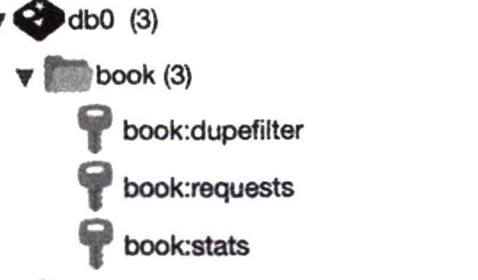
这里多了一个book: stats的key,打开看下结果,如图17-25所示。
这时候我们可以看到所有的 Scrapy 统计信息都存储到这里了,而且多个 Scrapy 爬虫通过此统计 信息实现了数据共享,任何一个爬虫的数据修改都会直接反映到这个 Redis的HSET里面,这样我们 就实现了 Scrapy 分布式爬虫的统计信息共享。
4. 总结
在本节中,我们首先介绍了 Scrapy 爬虫的统计信息是怎么实现的,然后介绍了如何实现 Scrapy 分 布式爬虫的统计信息共享。 统计信息共享是一个非常有用的功能,为后面数据可视化打下了基础,后文我们会继续学习如何 基于这些信息进行数据可视化。
17.9 基于 Prometheus 和 Grafana 的分布式爬虫监控方案
在上一节中,我们已经实现了 Scrapy 分布式爬虫的数据统计,这些统计数据可以通过 Redis 共享, 以实现数据的集中化存储和同步。 接下来,我们可能想做的就是基于这些数据,将其可视化出来,比如我们想要的结果可能是这 样的。 □ 不用太多复杂的编程或配置就可以搭建一个高性能、高可用、实用又美观的数据可视化面板, 面板中可以实时显示爬虫的各个指标的状态。 □ 当某项指标异常的时候,可以通过各个方式通知我们,以便及时调整和修复。
以上的两个需求其实就恰好对标了监控的两大核心问题——可视化+告警,这两个功能是监控系 统的核心重点。
本节中,我们要介绍的就是一个企业级监控数据的监控方案——Prometheus + Grafana,其中前者 可以实现流式监控数据的收集、存储、查询、告警,后者可以实现强大又精美的可视化面板,同时也 配备了告警功能。二者经常放在一起使用,同时二者还是云原生的重要部件,与Kubernetes 结合起来 可以实现全方位的数据监控和告警系统。 下面我们就来介绍 Prometheus 和 Grafana, 并介绍如何将二者与Scrapy 爬虫结合来实现数据监控。
1. Prometheus
Prometheus 是一个开源的服务监控系统和时间序列数据库,用于存储一些时序数据,比如某个时 刻的各个指标数据等。它可以从一些HTTP页面来拉取符合格式的时间序列数据,同时也支持通过中 间网关来推送数据。另外,它还支持灵活的查询语言 PromQL。利用PromQL,我们可以非常方便地 查询和分析某个时间段内的各项指标数据。另外,它提供了可视化UI,还支持告警配置等功能。 Prometheus 在记录纯数字时间序列方面表现非常好。它既适用于面向服务器等硬件指标的监控, 也适用于高动态的面向服务架构的监控。对于现在流行的微服务,Prometheus的多维度数据收集和数 据筛选查询语言也是非常强大的。 图17-26说明了 Prometheus 的整体架构,以及生态中一些组件的作用。
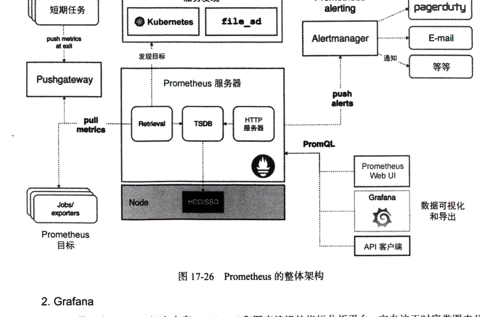
2. Grafana
Grafana 是一个开源的、拥有丰富 Dashboard 和图表编辑的指标分析平台,它专注于时序类图表分 析,而且支持多种数据源,如Prometheus、Graphite、InfluxDB、Elasticsearch、MySQL、Kubernetes、 Zabbix 等。
Grafana 的一个最大特点就是,界面非常酷炫!非常接近于一些企业级可视化大屏的效果。 就是用 Grafana 做的可视化监控面板。 Grafana 对 Prometheus 有非常好的支持。在Grafana中,可以添加 Prometheus 的数据源,同时支持 调试、查询和可视化展示。
3. 准备工作
在开始学习接下来的内容之前,请确保你已经完成了上一节的内容,能将 Scrapy 爬虫项目在 Kubernetes 上运行起来。 另外,我们还需要安装另一个 Kubernetes 套件 Helm,利用它我们可以快速部署一些 Kubernetes 服务, 安装流程可以参考:https://setup.scrape.center/helm。 做好如上准备工作之后,我们就可以开始实现 Scrapy与Prometheus + Grafana 监控系统的对接了。 要想完成这个工作,有三步需要做:第一步便是生成Scrapy的Exporter,用于收集统计数据;第二步便 是将 Grafana与Prometheus 对接起来,构建可视化面板;第三步便是配置告警。
4. Scrapy Exporter
接下来,我们首先来看看怎么将 Scrapy 的数据对接到 Prometheus,这就需要生成一个 Scrapy 的 Data Exporter。 我们首先来看看 Exporter 大约是什么样子的,如图17-28所示。 可以看到,这就是一个HTTP网页,网页内容遵循一定格式,这个格式可以被 Prometheus 自动解 析并存储下来。我们需要做的就是为 Scrapy 生成这样一个网页,然后将这个网页的地址告诉 Prometheus, Prometheus 便会每隔一段时间来抓取这个页面,从而获取到Scrapy 的各个指标数据了。
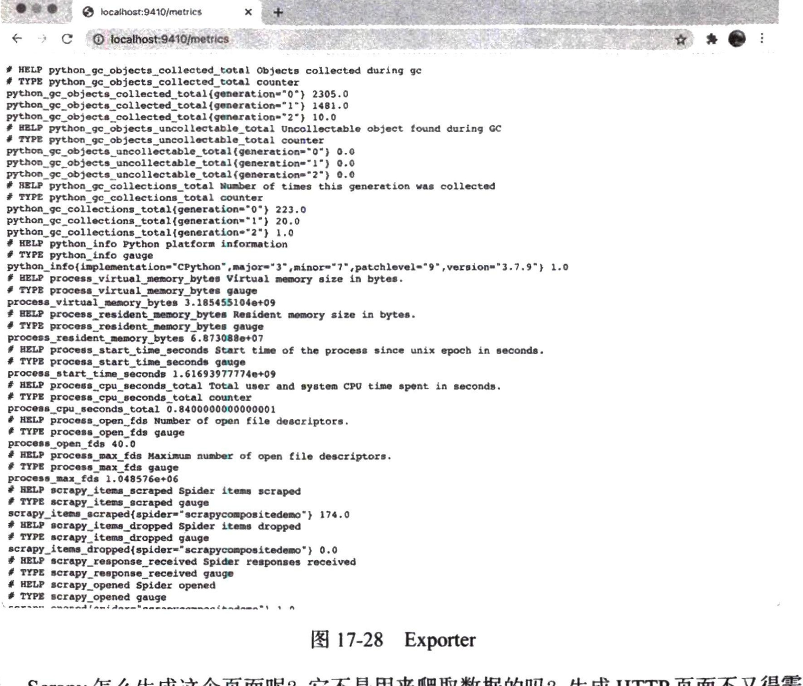
那么,Scrapy怎么生成这个页面呢?它不是用来爬取数据的吗?生成 HTTP页面不又得需要一个 HTTP服务器吗?这又是怎么实现的?其实,Scrapy的功能十分强大。Scrapy 确实主要用来爬取数据, 但这并不妨碍同时提供一个HTTP服务,而且HTTP 服务可以和 Scrapy 本身关联起来,比如读取到 Scrapy 的各项统计指标,然后将数据展示在网页之中,这是完全可以做到的。 怎么实现的呢?其实还是借助于Scrapy 的 Extension。关于Extension 的更多知识,请参考前文内 容。另外,我们还需要借助一个开源工具,叫作 prometheus_client,利用它我们可以通过传入一些参 数构造不同的指标数据,生成 Exporter 格式的内容。 关于Exporter 的实现原理,这里就不展开讲解了,我们可以直接借助一个开源库 GerapyPrometheus- Exporter 来实现。
安装方式很简单:
pip3 install gerapy-prometheus-exporter安装完成之后,需要在settings.py 里面配置并启用:
EXTENSIONS = {
'gerapy_prometheus_exporter.extension.WebService': 500,
}配置完成之后,我们可以在本地启动一下 Scrapy 爬虫,这时候我们就可以在本地 http://localhost: 9410/metrics 看到类似图17-28的结果,比如其中有一些指标如下:
# TYPE scrapy_items_scraped gauge
scrapy_items_scraped{spider="scrapycompositedemo"} 174.0
# HELP scrapy_items_dropped Spider items dropped
# TYPE scrapy_items_dropped gauge
scrapy_items_dropped{spider="scrapycompositedemo"} 0.0
# HELP scrapy_response_received Spider responses received# TYPE scrapy_response_received gauge
# HELP scrapy_opened Spider opened
# TYPE scrapy_opened gauge
scrapy_opened{spider="scrapycompositedemo"} 1.0
# HELP scrapy_closed Spider closed
# TYPE scrapy_closed gauge
# HELP scrapy_downloader_request_bytes
# TYPE scrapy_downloader_request_bytes gauge
scrapy_downloader_request_bytes{spider="scrapycompositedemo"} 616407.0scrapy_items_scraped 就是一项 Prometheus 指标名称,其中有一个 spider 属性叫作 scrapycompositedemo,其值是 174,这代表已经爬取了 174 条数据。另外还有其他的指标,比如 scrapy_downloader_request_bytes 就代表 downloader 请求的字节数,值为616407.0。 随着 Scrapy 的运行,爬虫的各项指标肯定会变化的,我们可以隔一段时间刷新下刚才的页面:
# TYPE scrapy_items_scraped gauge
scrapy_items_scraped{spider="scrapycompositedemo"} 509.0
# HELP scrapy_items_dropped Spider items dropped
# TYPE scrapy_items_dropped gauge
scrapy_items_dropped{spider="scrapycompositedemo"} 0.0
# HELP scrapy_response_received Spider responses received
# TYPE scrapy_response_received gauge
# HELP scrapy_opened Spider opened
# TYPE scrapy_opened gauge
scrapy_opened{spider="scrapycompositedemo"} 1.0
# HELP scrapy_closed Spider closed
# TYPE scrapy_closed gauge
# HELP scrapy_downloader_request_bytes
# TYPE scrapy_downloader_request_bytes gauge
scrapy_downloader_request_bytes{spider="scrapycompositedemo"}
930501.0就是这样一个网页,在原来的基础上,Scrapy 爬虫提供了HTTP服务,并在9410端口上运行了 此服务。 接下来,我们就重新把这个 Scrapy 项目部署到 Kubernetes上,并通过 Servcie 将 9410端口 暴露出来。首先,需要重新构建 Docker 镜像并更新。当然,也可以使用我已经构建好的镜像 germey/scrapycompositedemo。 修改 kubernetes/scrapycompositedemo/deployment.yaml文件,添加 containerPort 的配置,最终修 改结果如下:
apiVersion: apps/v1
kind: Deploymentmetadata: labels:
app: scrapycompositedemo
name: scrapycompositedemo
namespace: crawlerspec:
replicas: 1selector: matchLabels:
app: scrapycompositedemotemplate: metadata: labels:
app: scrapycompositedemospec: containers: env:
name: ACCOUNTPOOL_URLvalue: 'http://accountpool.crawler.svc.cluster.local:6777/antispider7/random'
name: PROXYPOOL_URLvalue: 'http://proxypool.crawler.svc.cluster.local:5555/random'
name: REDIS_URLvalue: 'redis://redis.crawler.svc.cluster.local:6379'
image: germey/scrapycompositedemo
name: scrapycompositedemoresources: limits: memory: "500Mi" cpu: "300m" requests: memory: "200Mi" cpu: "100m" ports:
containerPort: 9410这里就将 9410端口暴露出来了,其他配置保持不变。注意,此处如果使用你自己构建的镜像的 话,需要把 image 参数换一下。 同时新建一个 kubernetes/scrapycompositedemo/service.yaml 文件,内容如下:
apiVersion: v1
kind: Servicemetadata: labels:
app: scrapycompositedemo
name: scrapycompositedemo
namespace: crawlerspec: ports: - name: "9410"
port: 9410
targetPort: 9410selector:
app: scrapycompositedemo重新运行部署: kubectl apply -f kubernetes/scrapycompositedemo 结果如下: deployment.apps/scrapycompositedemo configured service/scrapycompositedemo created 这样就成功了。 然后我们可以看下Web服务有没有运行成功: kubectl port-forward svc/scrapycompositedemo 9410:9410 -n crawler 这时候重新打开 http://localhost:9410/metrics,如果能看到如图 17-28 所示的页面,就说明已经部署成 功了,而且通过9410端口就能获取到 Scrapy 分布式爬虫的运行状态统计。
5. Prometheus 对接
接下来,我们需要做的就是将上文实现的Exporter 和 Prometheus 来进行对接,也就是将 HTTP页 面配置到 Prometheus 里面,这样 Prometheus 就会定时抓取这些指标并存储下来了。 由于 Scrapy 爬虫项目是部署在 Kubernetes 上的,对于 Prometheus来说,当然同样要部署到 Kubernetes 里面才能访问了。 安装 Prometheus时,我推荐使用Helm 来安装,安装方法可以参考https://github.com/prometheus- community/helm-charts/tree/main/charts/kube-prometheus-stack。kube-prometheus-stack 是一个Prometheus 和 Grafana 的套件,安装此套件可以同时安装好 Prometheus 和 Grafana,非常方便。
个人推荐将 Prometheus 单独安装到一个新的 Namespace下面,比如新建一个 Namespace,叫作 monitor: kubectl create namespace monitor 然后利用 Helm 来安装对应的Repo 信息: helm repo add prometheus-community https://prometheus-community.github.io/helm-charts helm repo update 这一步相当于把一些配置文件添加到Helm中,这样Helm才能对其进行安装。 接下来,我们可以运行如下命令安装: helm install prometheus-stack prometheus-community/kube-prometheus-stack -n monitor 运行成功后,可能会得到如下信息:
NAME: prometheus-stackLAST DEPLOYED: Sun Mar 28 22:27:37 2021
NAMESPACE: monitor
STATUS: deployed
REVISION: 1NOTES: kube-prometheus-stack has been installed. Check its status by running: kubectl --namespace monitor get pods -1 "release=prometheus-stack" 如果看到如上结果,就证明已经安装成功了。 接下来,我们重新进入 Dashboard,查看 Prometheus 套件的运行情况。运行Dashboard 的流程见 17.8节。 进入 Dashboard 之后,切换到 Monitor 命名空间,你可能看到如图17-29所示的运行结果,一些 状态还是红色或者黄色,不用担心,目前还处在初始化的过程中,耐心等待一段时间,等待全部配置 完成之后,就好了。
另外,每个 Chart 预留了一些配置项,这些配置项在 values.yaml 里面是可以复写、修改的,具体 的配置可以查看 https://github.com/prometheus-community/helm-charts/blob/main/charts/kube-prometheus- stack/values.yaml 文件。比如,通过修改 Prometheus 的配置项,就能达到修改 scrape_configs 的目的, 这项配置叫作 prometheusOperator.prometheusSpec.additionalScrapeConfigs. 注意 此项配置的名称可能会随着当前 Helm Chart 的修改而不同,主要是明白其原理,具体的配置 需要以官方文档为准。 这时候我们可以将此项配置进行修改: prometheusOperator:
#此处省略其他配置项prometheusSpec:
#此处省略其他配置项additionalScrapeConfigs: - job_name: scrapycompositedemo static_configs: - labels:
app: scrapycompositedemotargets: - scrapycompositedemo.crawler.svc.cluster.local:9410 这里我们添加了刚才的 Scrapy 爬虫的配置项,指定了 labels 和 targets,具体的配置格式可以参考
https://prometheus.io/docs/prometheus/latest/configuration/configuration/#scrape_config.其中值得注意的是,我们将 targets 配置为 scrapycompositedemo.crawler.svc.cluster.local:9410, 可以通过此 Host 在 Kubernetes 中访问到对应的服务。 配置完成之后,可以通过如下命令应用此更新: helm upgrade -f values.yaml prometheus-stack prometheus-community/kube-prometheus-stack -n monitor 如果出现类似下面的输出结果: Release "prometheus-stack" has been upgraded. Happy Helming!
NAME: prometheus-stackLAST DEPLOYED: Sun Mar 28 23:22:44 2021
NAMESPACE: monitor
STATUS: deployed
REVISION: 2NOTES: kube-prometheus-stack has been installed. Check its status by running: kubectl --namespace monitor get pods -l "release=prometheus-stack"
...就证明更新生效了。
6. Grafana 配置
接下来,我们再回到 Grafana 的配置中,我们可以依然在本地通过 kubectl port-forward 将服务 转发到本地: kubectl port-forward svc/prometheus-stack-grafana 3000:80 -n monitor 注意 这里服务的名称可能随着 Helm Chart 的修改而不同,主要是明白其原理,具体的配置需要以 官方文档为准。 这里我们将 Grafana 从 80 转发到本地 3000 端口,这时候我们在本地浏览器上打开 http://localhost: 3000/,就能看到如图 17-30 所示的结果。
进入了 Grafana的欢迎界面,但是并不知道用户名和密码是什么,这时候密码会存在对应的Secrets 文件中。在此 Helm Chart中,它存在一个叫作 prometheus-stack-grafana的Secret中,通过Dashboard 我 们可以清楚地看到用户名和密码,如图17-31所示。
可以看到,初始用户名就是admin,密码就是 prom-operator。在Grafana 欢迎界面中输入用户名 和密码,我们便可以进入控制面板了,如图17-32所示。
接下来,我们切换到Explore页面,可以看到已经配置好的 Prometheus 数据源,如图17-33所示。
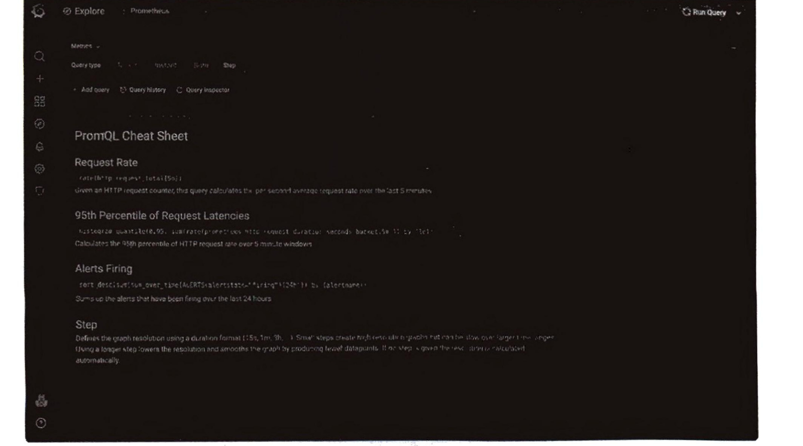
如果上文所述的 scrapeconfig 配置成功的话,此时在这里我们可以搜索到 scrapy 相关的指标,如 图17-34所示。
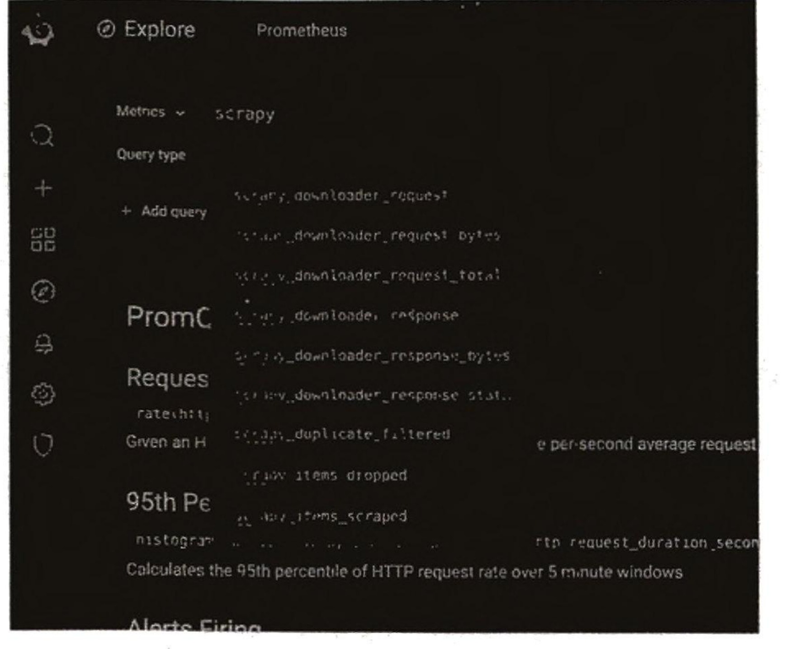
比如此时我们输入 scrapy_items_scraped,即抓取数据的条数,然后将时间范围设置为5min,点 击右上角的 Run Query 按钮,可以得到如图17-35所示的图表。
这里我们就可以观察在过去五分钟内抓取到的数据量的变化情况了。 当然,上面的页面仅仅是调试用的,我们可以试着创建一个 Dashboard。
点击+号并选择创建 Dashboard,创建一个Dashboard,如图17-36所示。 然后点击 Add new panel 按钮,创建一个新面板,如图17-37所示。
这里我们可以按照如下情况配置,如图17-38所示。
Metrics:可以任意选择,比如这里依然选择 scrapy_items_scraped,代表已经爬取到的数据 条数。
Legend:图例名称,这里我们可以直接使用{{app}}来获取其中的属性。因为该条统计信息 的 app 的属性就是 scrapycompositedemo,所以这里图例的名称就叫作 scrapycompositedemo。
Format:保持默认值 Times series 即可,即按照时间序列显示。
右侧的一些样式配置可以自行选择,比如配置面板标题、选择连线样式、是否显示数据点、预 警值等。
配置完成之后,点击右上角的 Apply 按钮,保存该配置面板。另外,还可以继续增加其他面板。 配置好了之后,将整个仪表盘保存下来。 比如,最后可以配置成类似图 17-39 所示的页面,这样我们就可以一目了然地看到爬虫的爬取状 态了。
另外,我们还可以设置告警,它既可以在 Grafana 里面使用內置的 Alert 设置,也可以使用 Alert Manager 设置。前者配置更加简单、方便,后者功能更为灵活、强大,可以根据个人偏好进行选择。 具体设置方式可以参考如下内容。
Grafana Alert 配置:https://grafana.com/docs/grafana/latest/alerting/create-alerts/。
Prometheus Stack Alert 配置:https://github.com/prometheus-operator/prometheus-operator。
7. 总结
本节中,我们了解了在 Kubernetes 中监控 Scrapy 爬虫数据的解决方案。利用 Prometheus,我们可 以非常便捷地收集 Scrapy 爬虫项目的各项指标数据,同时利用 Grafana 我们可以轻松地创建非常酷炫 的图表从而实现实时监控。 另外,我们还可以通过配置告警规则来开启告警,当爬虫数据或者主机数据异常时,我们就可以 及时收到告警信息了。